贾维斯终于来了吗？ TypSafe刚刚推出了Jev，这是一个结构化决策API，可以路由模型、对搜索结果进行排名并检查其他人工智能系统，而无需聊天机器人参与循环。 想象一下一个真正有效的…
✓JEV 课堂
13 节课，一节课一类用法 · 每条案例本地视频+缩略图 · 点开即看，看完点 ✓ 记进度
怎么用这个课堂：从上往下，一节课一节课来。每节课先看「▶ 先看这条」视频（本地视频直接放，不用登录），再扫一眼「▶ 再看这条」，然后去「Jev 裁判台」网页把那一招亲手玩一遍。
练手作业（每节课后做）：第 1 课→在 AI 对话里喊「让裁判看看 X」；第 2 课→丢给 AI 两个模型让它用裁判选；第 3 课→让 Codex 也接上裁判试一次；第 4 课→拿裁判台判「周末去哪玩」；第 5 课→让裁判给你的某个想法打分；第 6 课→让裁判判 3 条资讯好不好；第 7 课→拿裁判台试「这 3 个标题哪个好」；第 8 课→让 AI 批量判 5 件事。
🚀 十分钟跑通（新手从这里开始）：① typesafe.ai 注册领 Key（新账号自带 $5 额度）→ ② 设环境变量 TYPESAFE_API_KEY → ③ npx skills add typesafe-ai/skills --skill typesafe-ai 装官方 Skill → ④ 让 Codex 调一次最小测试，拿到真实返回才算接通 → ⑤ 丢一篇文章实战：Codex 出 16 个候选标题，Jev 按吸引力/原文贴合度/表达自然度打 0-4 档分，程序加权出前 6。完整图文步骤见仓库 USAGE.md · 实操案例出自李岳 · 公众号「丶平凡世界」（2026-09-22，本指南为浓缩版，细节与版权归原作者）
进度 0 / 202顶部进度条 · 点卡片右上角 ✓ 记「已学」
📣 一句话看懂 Jev
34 案例 · 3708.5万 浏览 ▾官宣、科普、45 秒讲清它是啥——先搞清它到底是个啥：看创始人自己怎么定义它，再看两条 45 秒科普。
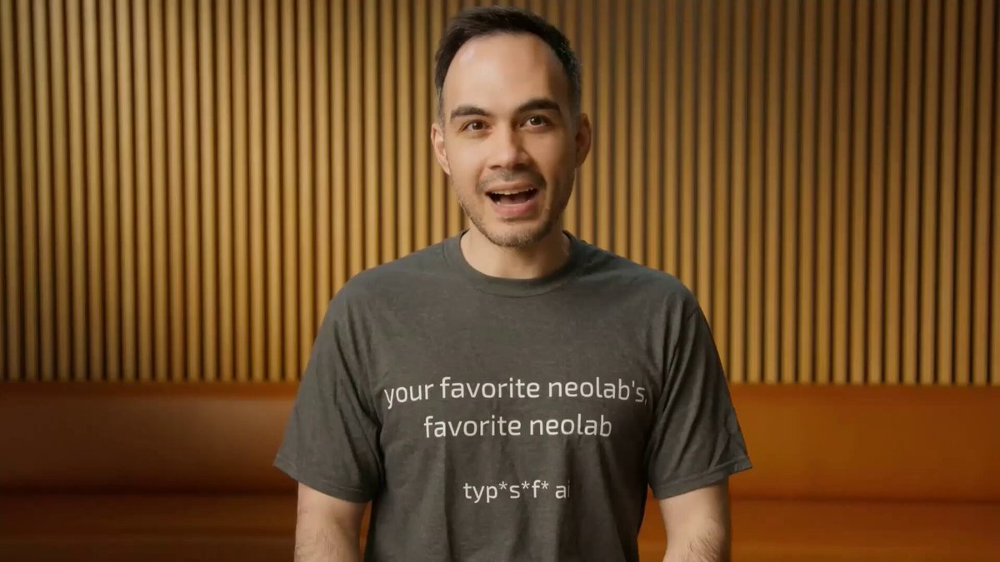
▶ 先看这条Diogo Almeida@CompleteSkeptic · 3460.4万人看过在共同发明ChatGPT后，我不断问自己：为什么超人聊天模型没有导致AGI？ 过去两年，我一直在秘密开发一种新的模型训练方法（RLCD），以及我们今天发布的一种新型前沿人工智能模型：Jev ·快20- 200倍 ·便宜4
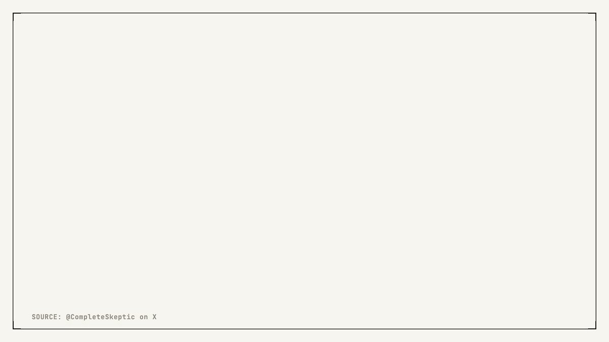
▶ 再看这条Matija Sosic@MatijaSosic · 140.9万人看过这是Jev上的45秒TL;DR。 我发现核心想法非常简单，但视频让它真的很难理解。 希望您发现这对您有帮助。https://t.co/KtSKlEMVL3
本类还有 32 条（点开墙）
▶
GeniusThinking@GeniusGTX · 7000人看过
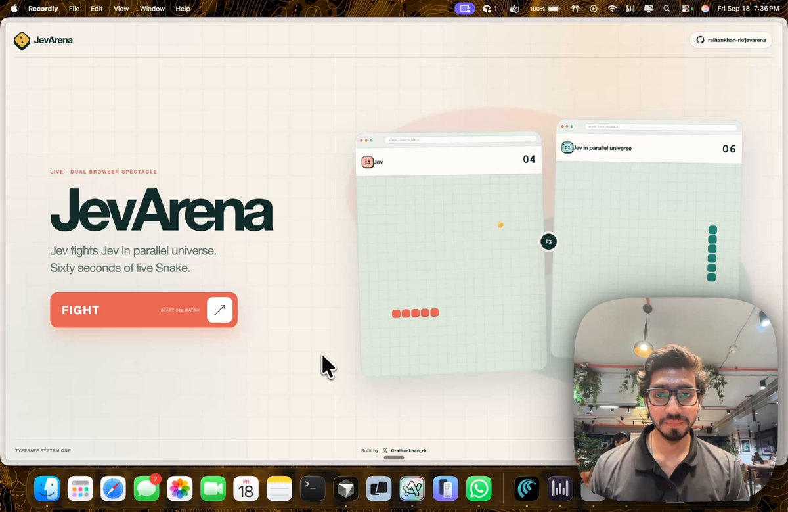
▶ Raihan Khan@raihankhan_rk · 3300人看过我已经通过@typesafeai访问Jev大约30个小时了，我无法停止思考它可以在数百万个地方使用。🤯 与此同时，查看我制作的这个有趣的蛇游戏，其中2个Jev互相竞争以夺取奖杯🏆 在这…
✓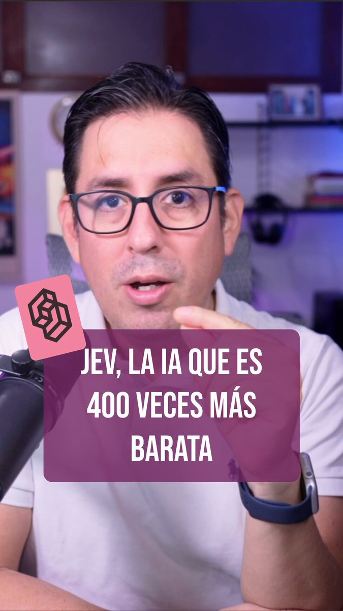
▶ EDteam@edteamlat · 1300人看过Jev 是 ChatGPT 的创建者之一 Diogo Almeida 创建的新 AI ， 承诺比目前的模型快 200 倍 ， 便宜 400 倍。 与法学硕士不同的是 ， 它不会逐字逐句…
✓
▶
Aria@Entelic_Aria · 3100人看过
每个模特都想要这份工作。 速度最快的人说：“我明白了。” 推理模型要求更多上下文。 安全模型说：“绝对不。” Jev介入并将每个任务发送到其所属的地方。 Aria上的Jev决策每100…
✓
▶
Aaron Levie@levie · 1.7万人看过
Jev将非常有助于代理在工作流程、数据分类、判断调用和企业中数百个其他用例中做出瞬间决策。 以下是Box和Jev的快速演示，以实现这一目标。演示从Box中提取事件报告，询问其是否面向客…
✓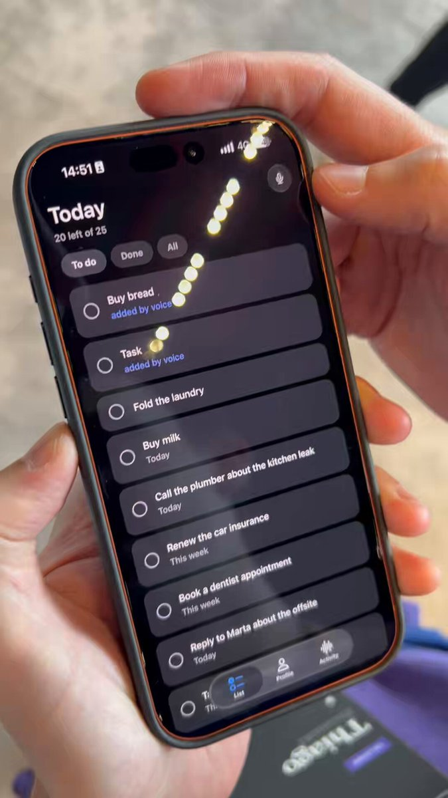
▶ Thiago Brezinski@thiagobrez · 1200人看过在@AgentConf https://t.co/y3UpKP2e4z上直播@typesafeai Jev演示
✓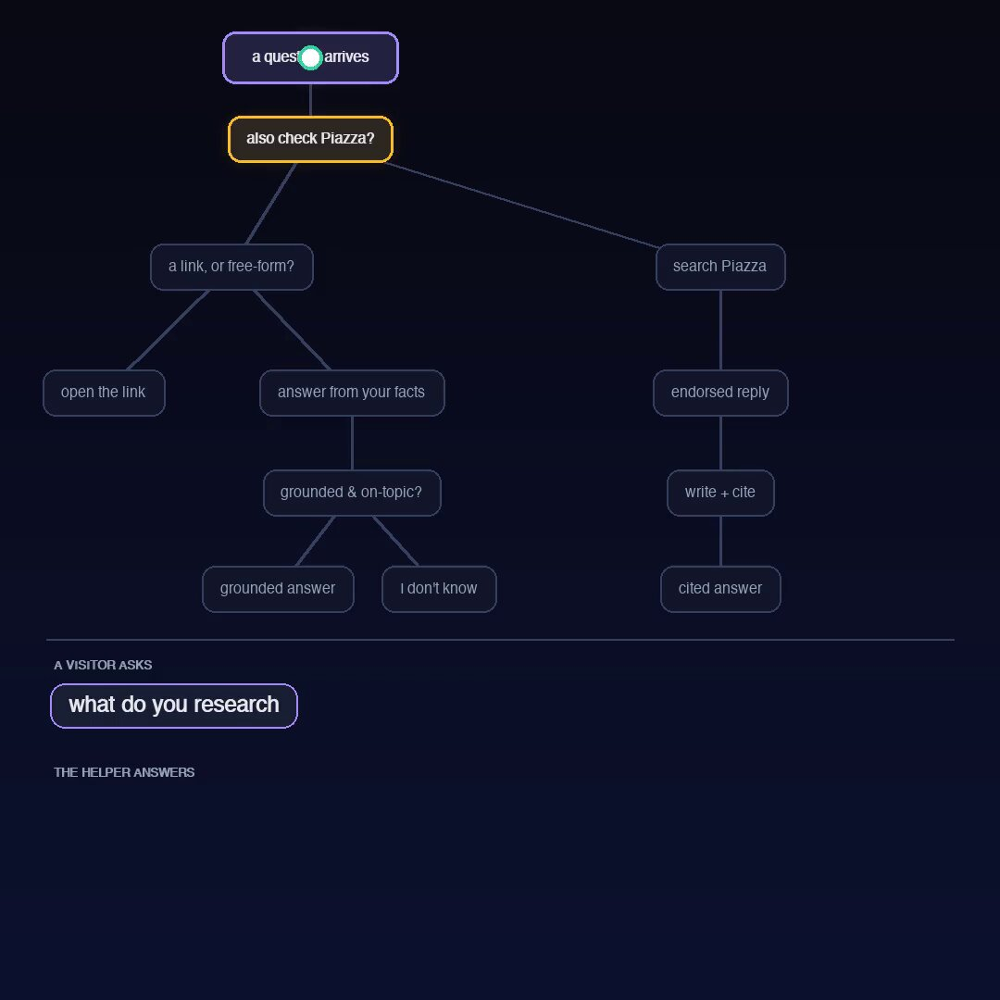
▶ Yuntian Deng@yuntiandeng · 1.3万人看过我越来越认为未来的软件将将控制流代码与用于“模糊”判断的小型神经程序相结合。 这就是我一直在用ProgramAsWeights探索的内容，它回答了这些神经程序来自哪里的问题：它们是从英…
✓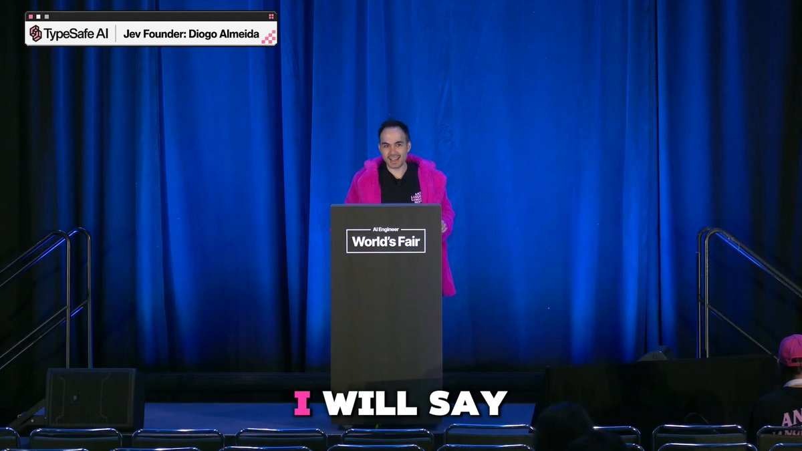
▶ Codez@0xCodez · 2500人看过Jev创始人Diogo Almeida（前OpenAI）： “下一个时代不是克劳德·密码时代。Claude Code仍然是援助时代的一部分- Jev是下一步 Jev速度快200，便宜4…
✓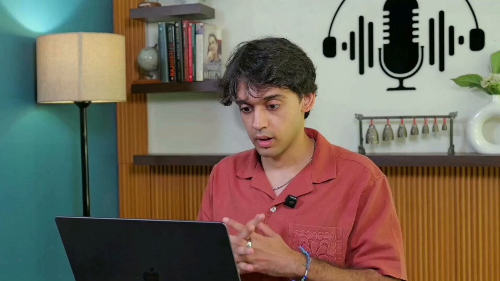
▶ Ansh Nanda@anshnanda · 1.8万人看过到目前为止，您可能已经在您的时间轴上看到了Jev。 是的，这是一个速度快且便宜的型号。 但它与GPT-6 Astra、Fable 5.1和Deepseek v4.1 Flash相比如何…
✓
▶
Moritz Kremb@moritzkremb · 11.0万人看过
完整的Jev 它是什么、如何用它构建以及它可以解锁哪些新应用程序 → 0：00简介 → 0：34杰夫解释道 -4：06 API设置 -5：59演示1：语音控制浏览器 → 11：33演示…
✓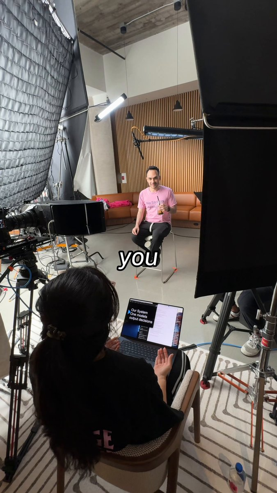
▶ TypeSafe AI@typesafeai · 4.8万人看过在我们的发布视频幕后.幕僚长@justKDeng让我们的首席执行官@CompleteSkeptic保持正轨https://t.co/81HHtsj4eK
✓
▶
trou@_trou3 · 11.6万人看过
对于那些仍然不明白@typesafeai的Jev能做什么的人来说，这里是一个例子。 Jev可以读取数十个结构化交易信号，然后做出明智的决策。 是时候让您的系统真正活跃起来了。 多么美好…
✓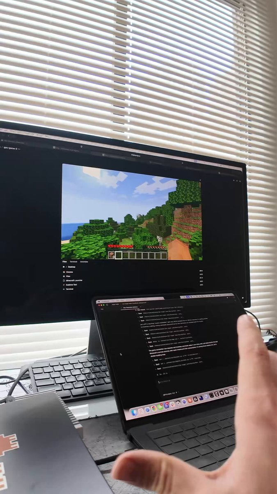
▶ Nick Vasilescu@nickvasiles · 1.3万人看过Jev是ChatGPT联合发明者的一款新型号，可以实时使用计算机工具 目前它正在Orgo上的云中自己的计算机上玩Minecraft 这就是只有一辆Jev的样子，但想象一下： 一千个怎么…
✓
▶
AiMind@AIMind_Ai · 2900人看过
ChatGPT的联合发明人Diogo Almeida表示，他的新型号Jev比AI快193倍。 Typesafe的Jev从不写文本。上下文输入，输入决定。是或否，而不是一篇论文。 您正在…
✓
▶
Diogo Almeida@CompleteSkeptic · 3460.4万人看过
在共同发明ChatGPT后，我不断问自己：为什么超人聊天模型没有导致AGI？ 过去两年，我一直在秘密开发一种新的模型训练方法（RLCD），以及我们今天发布的一种新型前沿人工智能模型：J…
✓
▶
Daniel White@dwhitedesign · 3500人看过
整个晚上都在理解这一点，所以Jev用34秒的时间讲述了这一点。 非常兴奋能够和@typesafeai一起建造一些令人难以置信的东西，这真是一个活着的时刻.. https://t.co/…
✓
▶
Cloudflare@Cloudflare · 1.1万人看过
收件箱演讲者公告：@CompleteSkeptic首席执行官，@typesafeai Cloudflare Connect 立即注册：https://t.co/YCwgnPlLDj h…
✓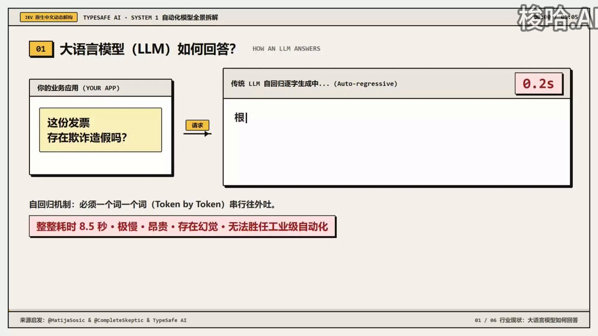
▶ 梭哈.AI@SUOHA_AI · 4.5万人看过很多人没看懂爆火的JEV是什么？ 所以我做了一个 50 秒的演示视频，带大家把海外刷屏的 JEV 以及它背后的底层架构看透👇（见下方视频） JEV 是前 OpenAI、参与 ChatG…
✓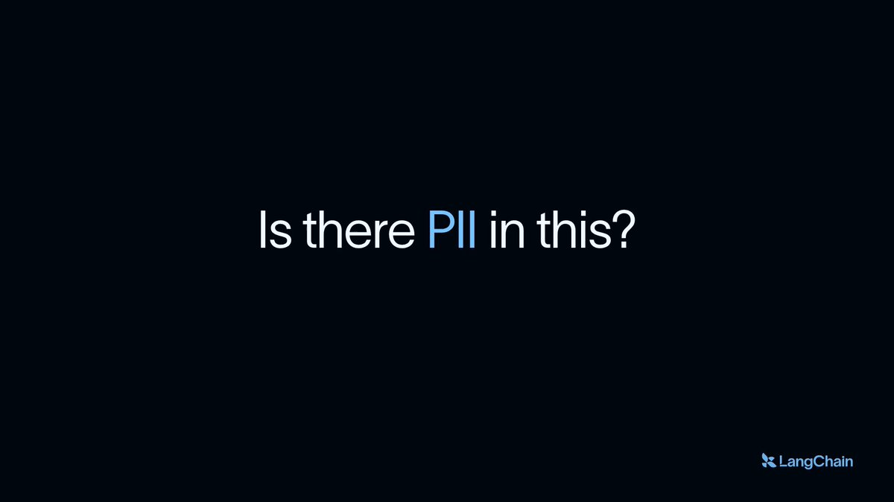
▶ Sydney Runkle@sydneyrunkle · 1.6万人看过@typesafeai的jev不会生成文本，而是生成结构化输出 这使得它非常适合模型路由、工具选择/搜索和多种形式的护栏等分类任务！ 与执行相同任务的LLM相比，它的速度快且便宜得离谱…
✓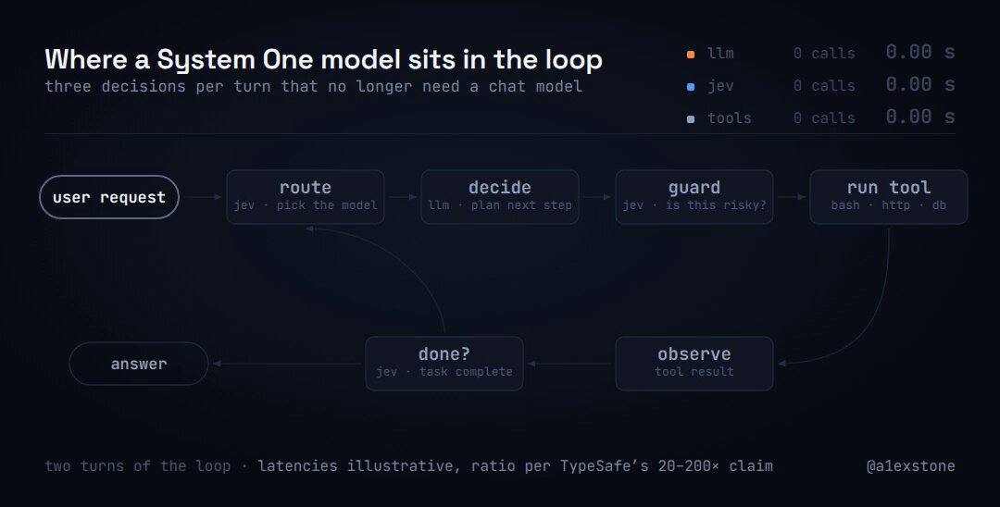
▶ Alex Stone@a1exstone · 2000人看过Typesafe发布了一个不生成文本的模型，它打破了代理循环的成本底线 jev是他们所谓的系统一模型。你向它发送一个状态和一组问题，它会返回带有概率的类型化答案。没有令牌，没有采样，没…
✓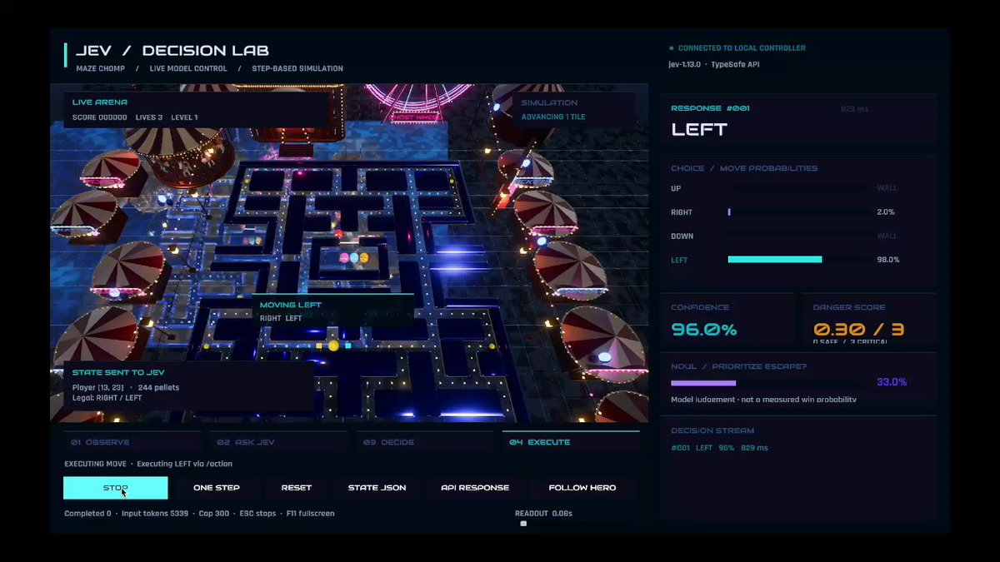
▶ Remek Kinas@KinasRemek · 1.1万人看过在我看来，像JEV这样的模型将会带来巨大的改变。目前的LLM模型模拟的是系统2的运作方式。对我来说，JEV的实现是过去几个月里出现的最新的概念之一。 虽然看起来没什么特别之处（只是一个…
✓
▶
Veee@vikktorrrre · 3600人看过
我们花了3年时间学习如何写提示 @typesafeai的Jev将大提示分解为您可以围绕的较小决策 你不是一个巨大的提示，希望模型一切顺利，而是问一些更小的问题： - 这很紧急吗？ - …
✓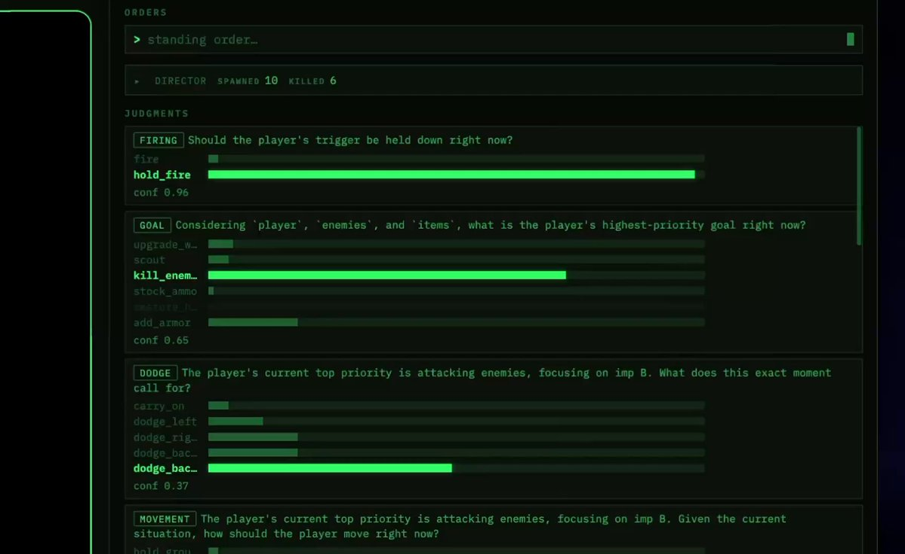
▶ Apoorv Goyal@apooorved · 152人看过认识一下杰夫 （Typesafe的第一个“System One”模型） 谁知道人工智能的下一步将是让LLM过时…… 足够快的人工智能可用于实时应用 （包括实时玩《毁灭战士》） 我在哪里…
✓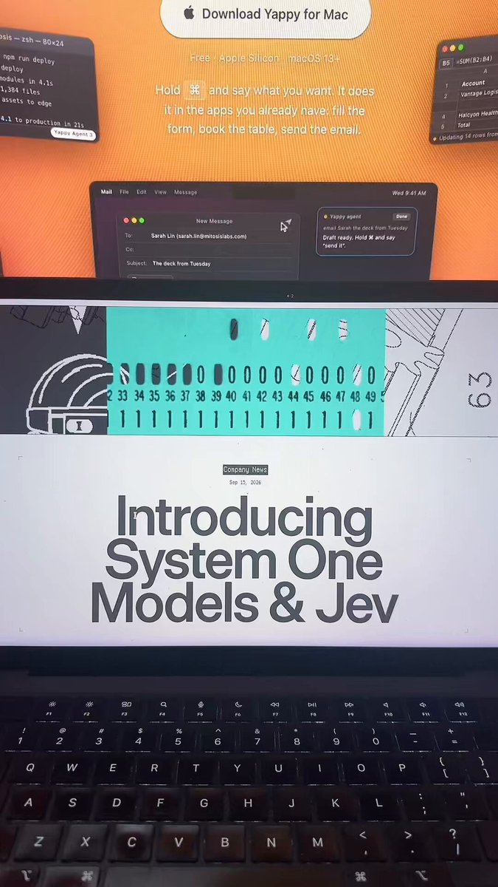
▶ Prakshal Jain@prakshaljain_ · 324人看过Jev by @typesafeai将您的DeliverMac变成了人工智能代理. 这对你意味着什么？ - Jev是ChatGPT共同发明者的一款新型号，可以实时操作计算机工具。 - …
✓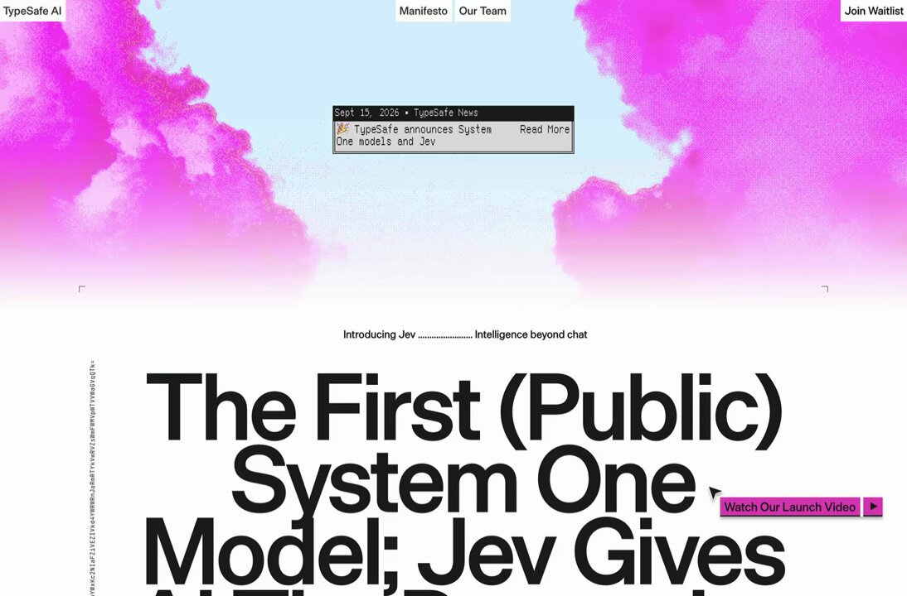
▶ Framer@framer · 7900人看过建设变得更快了。味道并不是可以选择的。当该网站在第一天就必须看起来像一家严肃的公司时，像@typesafeai这样的前沿团队仍然会去Framer。https://t.co/cHYyiB…
✓
▶
Matija Sosic@MatijaSosic · 140.9万人看过
这是Jev上的45秒TL;DR。 我发现核心想法非常简单，但视频让它真的很难理解。 希望您发现这对您有帮助。https://t.co/KtSKlEMVL3
✓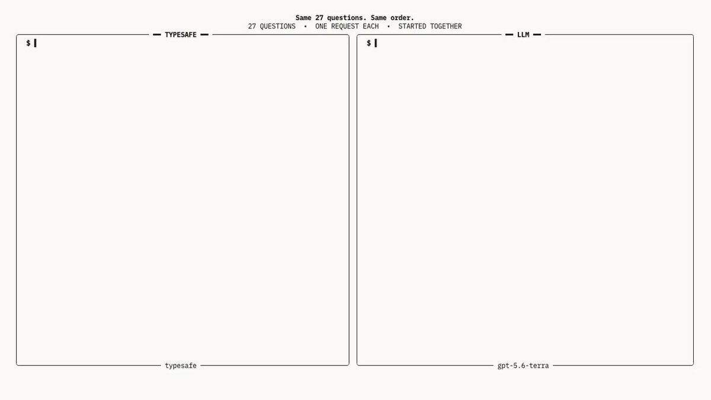
▶ Rohan Paul@rohanpaul_ai · 1.7万人看过对于开发人员来说，又一次精彩的发布：它比LLM快20- 200倍，因为它完全跳过了逐代币生成。 TypSafe AI刚刚推出Jev， > 20- 200倍快 >40- 400倍便宜（含…
✓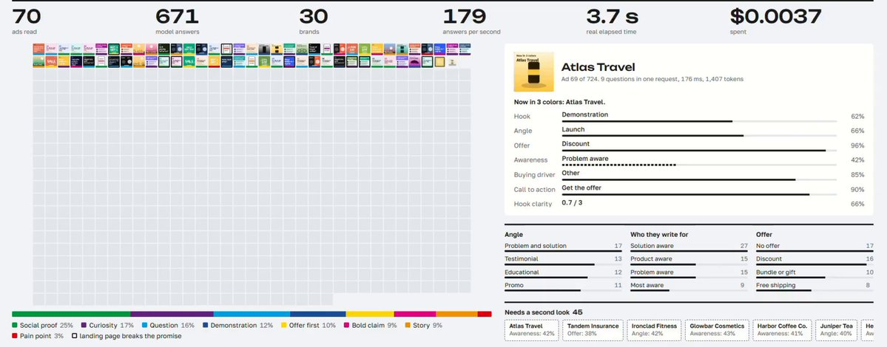
▶ Ackerman@Yarilo7brigada · 2600人看过jev是一款非常酷的产品 看到一篇关于jev的帖子并决定查看一下 这东西简直是金子，无论谁建造它，都是天才 吉普车是未来 在40秒内扫描了700多个现场广告，只花了我4美分。 如果你从…
✓🧭 给 Agent 当调度员
20 案例 · 50.9万 浏览 ▾判断任务该派给谁：路由模型、挑技能、分工——它最常见的活：当调度员。看 Slack agent 怎么被它提速一倍，再看 90 个 skill 怎么自动选对。
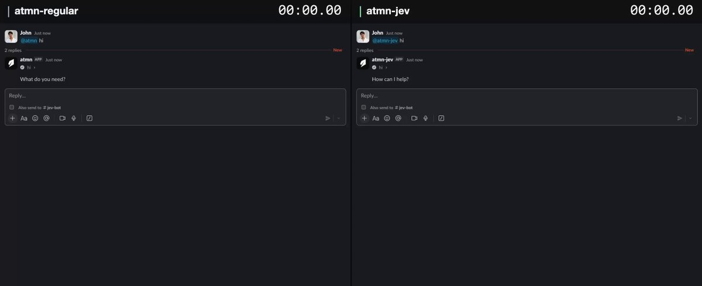
▶ 先看这条John Yeo@johnyeo_ · 4900人看过Jev让我们的Slack代理速度提高了2倍️ 我们的代理可能会相当慢，因为它需要阅读技能并弄清楚要调用哪些工具。 我们使用@typesafeai的新模型来加速这一过程，首先向它传递提示，并在将其交给代理之前对要使用的最佳
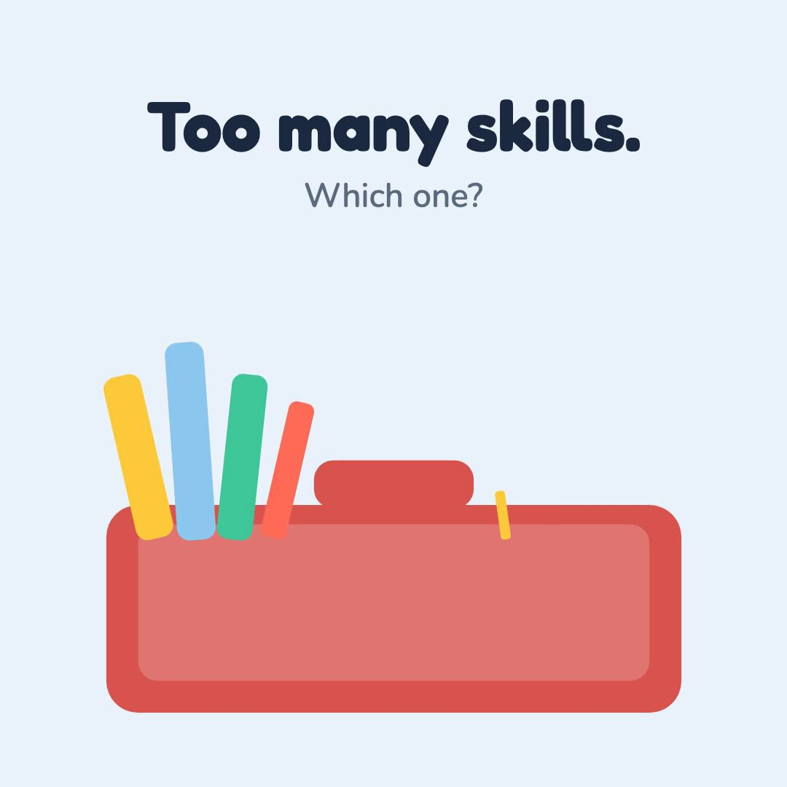
▶ 再看这条Lomesh Dutta@lomeshdutta · 1800人看过刚刚黑了一个有趣的小项目- Skill Router（开放源代码）使用Claude和Jev @typesafeai 为什么？我安装了约90个Claude Code技能，并使用了大约5个技能。其余的都很好，我只是忘记了它们
本类还有 18 条（点开墙）
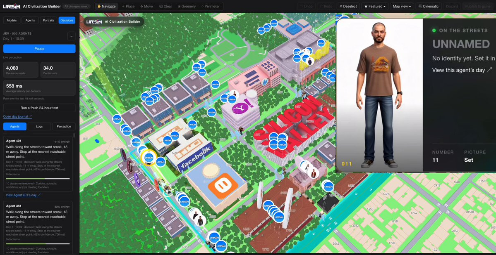
▶ Cris Lenta@crislenta · 5.8万人看过杰夫实际上疯了。 我们对它进行了基准测试，结果彻底改变了我们的游戏： > 500名实时代理 >并行运行 >在3D环境中 初步结果很疯狂： 平均延迟> 500 ms > 35个API调用…
✓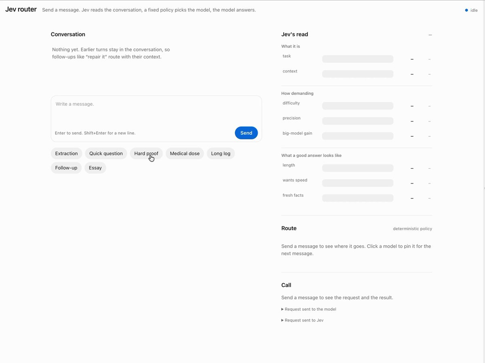
▶ Duncan@ephraimduncan · 10.9万人看过@typesafeai用Jev构建了一个模型路由器。 Jev决定哪种型号最适合您的请求，然后请求将发送给该型号。https://t.co/HHlmjOE66u
✓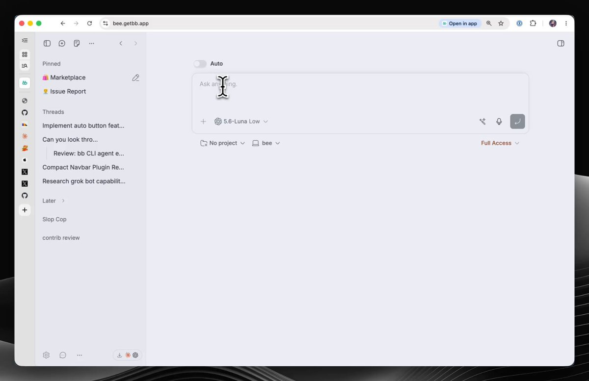
▶ Sawyer Hood@sawyerhood · 4600人看过感谢@typesafeai jev，我不再在提示框上填写所有这些字段。 它为我选择代理/型号/计算机/文件夹。 - 对于重大重写，它使用了Fable + Claude Code。 - …
✓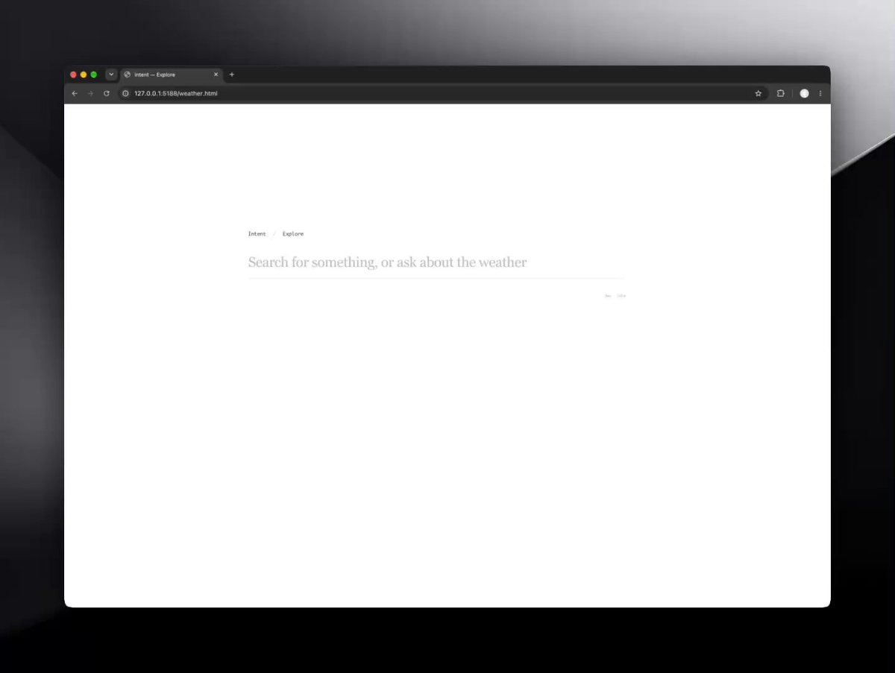
▶ Yoshiki Miura@miiura · 3.5万人看过无需等待输入即可调用函数。仅在需要时回答。 @typesafeai Jev在您输入时理解意图和参数，然后在一切就绪后提前执行。https://t.co/n4m9lGGf8S
✓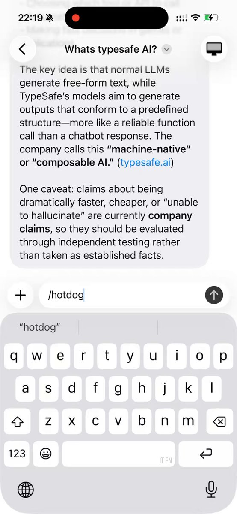
▶ Pontus Karlsson@coolastekatten · 2.7万人看过好吧@typesafeai熟了 Jev确实是构建LL M的下一个时代 今晚将此添加到Scappa https://t.co/YeYnj5pc7l
✓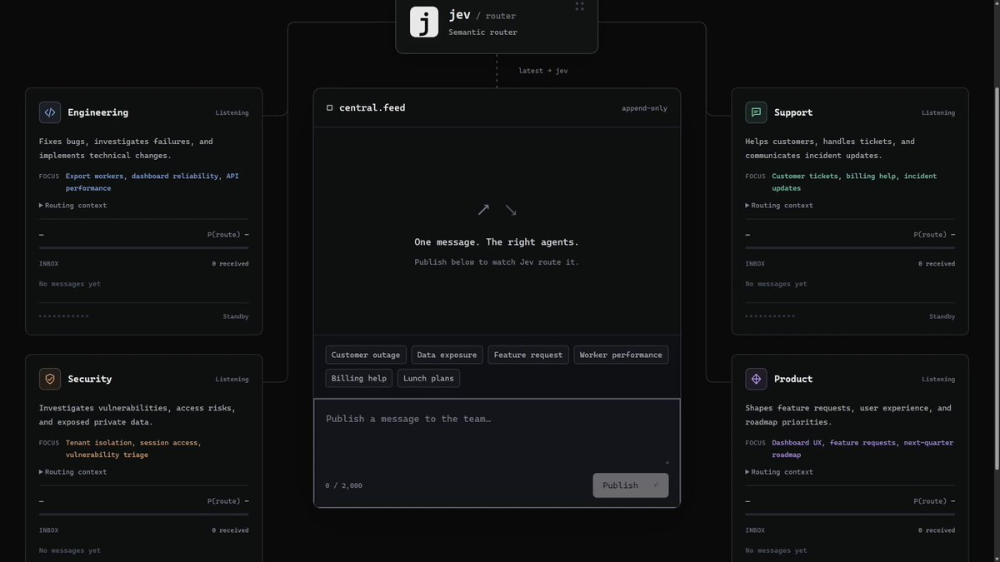
▶ Cyclotruc@romdot2 · 5200人看过没有替补的发布-替补 @typesafeai jev几乎立即完成路由 https://t.co/pTQIUtVBrI下方的演示链接
✓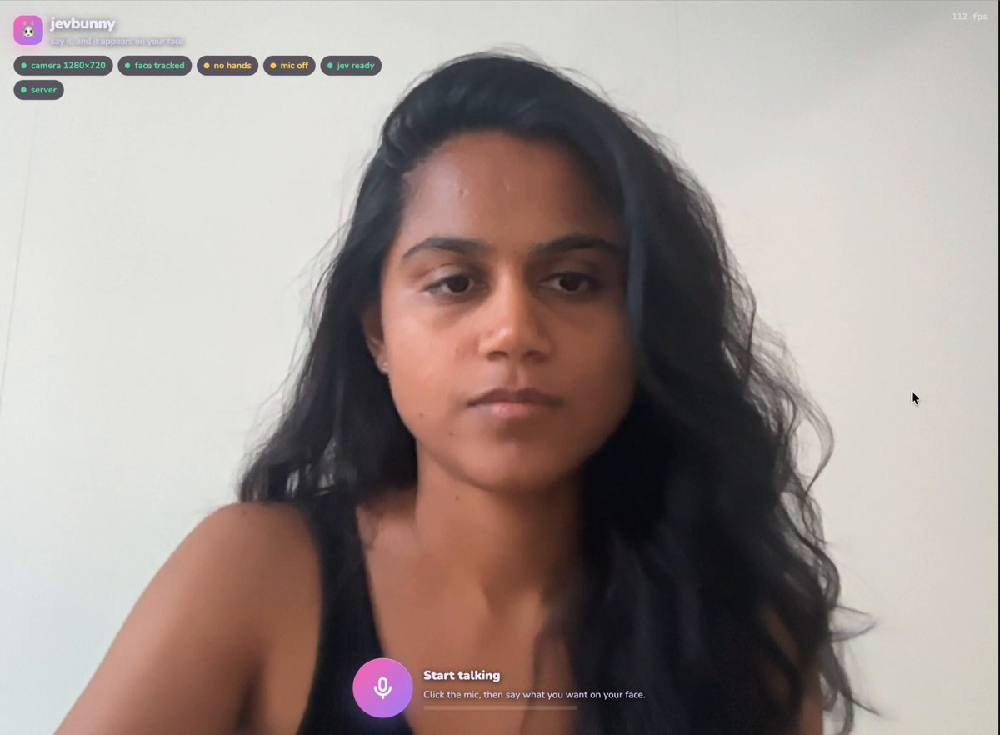
▶ Pratim Bhosale@BhosalePratim · 4700人看过今天玩了一下@typesafeai Jev，主要是为了了解它对工具调用的作用。 我没有让法学硕士决定该做什么，而是用Jev代替了这部分。 我的了解是，我们将能够让代理在用户完成句子之前…
✓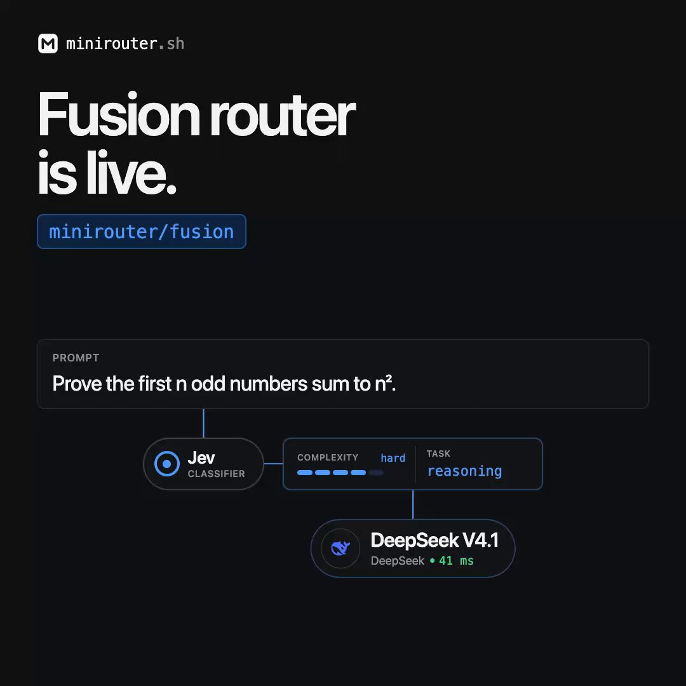
▶ Zhe@iamzhe · 3300人看过今天https://t.co/xXR4JLt377的小更新： 1.迷你路由器/融合已上线。它通过@typesafeai对Jev的每个请求进行分类，然后路由到与任务类型和复杂性相匹配的精…
✓
▶
Lomesh Dutta@lomeshdutta · 1800人看过
刚刚黑了一个有趣的小项目- Skill Router（开放源代码）使用Claude和Jev @typesafeai 为什么？我安装了约90个Claude Code技能，并使用了大约5个…
✓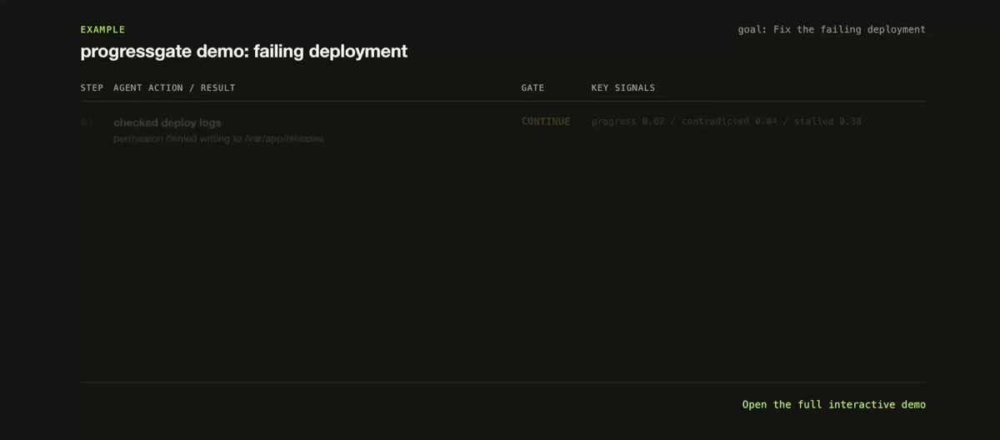
▶ Ashutosh Mathore@ashutoshftw · 667人看过Jev解锁了一种阻止AI代理旋转的新方法。 代理并不总是重复相同的操作。有时候，他们会基于同样的错误假设尝试不同的事情。 我围绕这个建立了一个语义断路器。 在一次卡住的运行中： 12次…
✓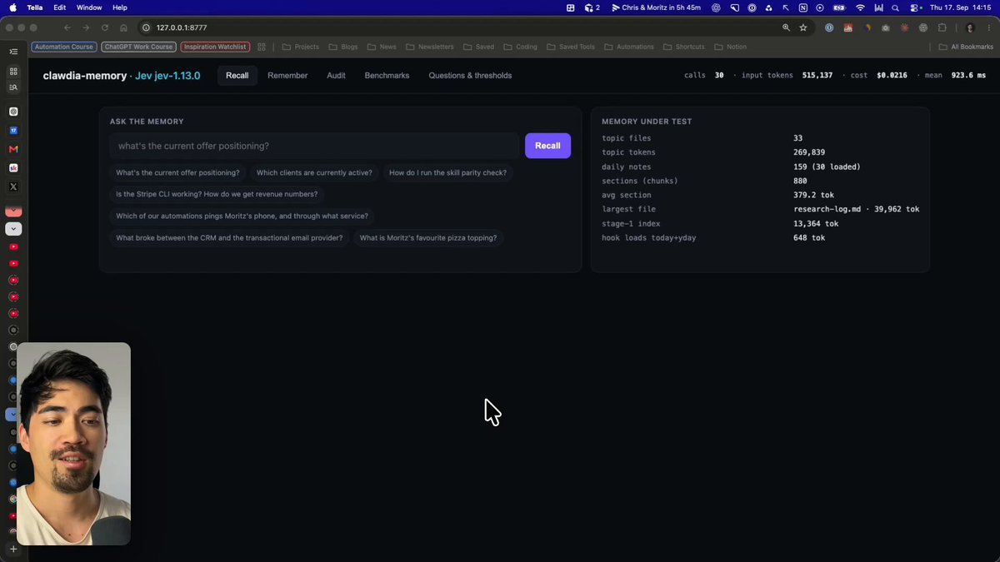
▶ Moritz Kremb@moritzkremb · 3.1万人看过这很酷。我使用Jev来改进我的自定义内存系统。 结果： - 使用的代币减少了94% -2-3倍更快的内存检索 这只是一个快速测试，但我相信它开辟了很多新的机会。https://t.co…
✓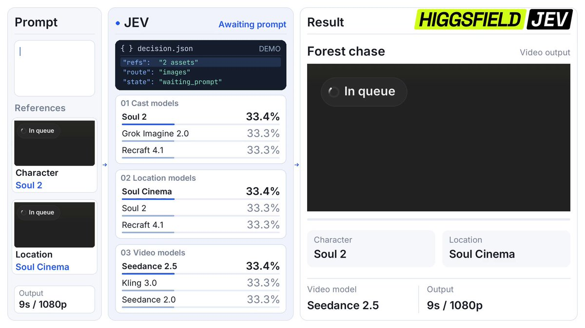
▶ Higgsfield AI 🧩@higgsfield_ai · 5200人看过我们找到了Jev的完美用例：自动路由GenAI模型。 想法：Jev为您的任务选择最具成本效益的型号，平衡速度和质量。 所有世代都使用Higgsfield API制作。https://t…
✓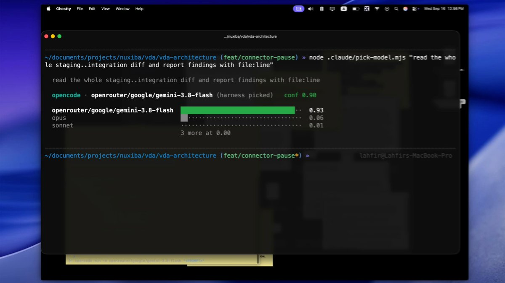
▶ Lahfir@mdlahfir · 12.5万人看过Jev解决了本地线束/模型布线 我使用Claude Code、Codex和Opencode的组合作为我的本地代理堆栈，并且始终在系统提示/规则中强制执行到其他安全带的路由 借助Clau…
✓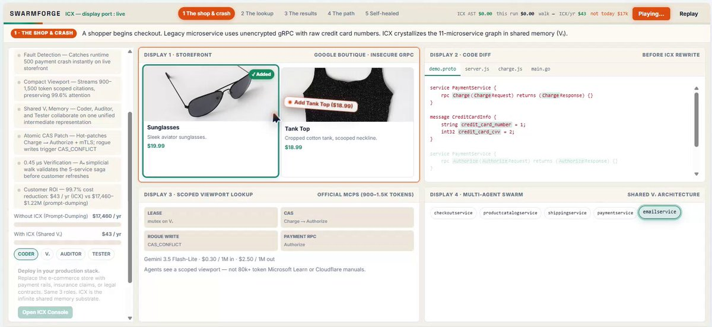
▶ Casey Lee Race@King_of_Calera · 33人看过是的，但Jev能进行多特工群吗？ 企业解决方案可以在客户刷新浏览器之前自行修复现场制作？ (Demo人类放慢速度）https://t.co/Ky7xNqziss
✓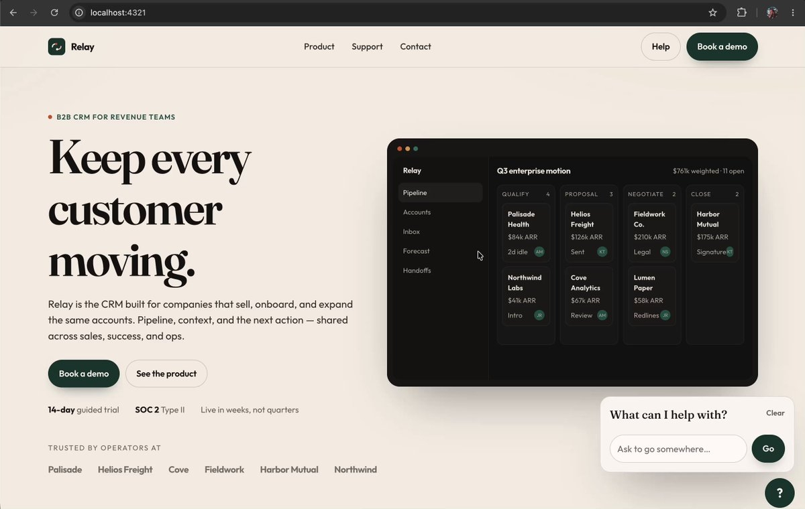
▶ Shane@digitalshane_ · 2.6万人看过我可以接触Jev了！ 它可以根据网站访问者需要帮助的内容将他们路由到他们需要的页面！https://t.co/AydblKM9Y0
✓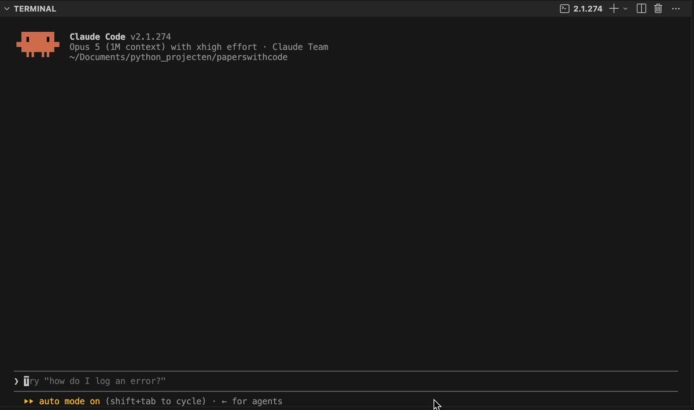
▶ Niels Rogge@NielsRogge · 1.5万人看过介绍带有Code的论文LCP服务器！ 为了庆祝它的发布，我请Claude Code通过@typesafeai使用“search_papers”工具研究Jev的架构。 这是它的结果： “…
✓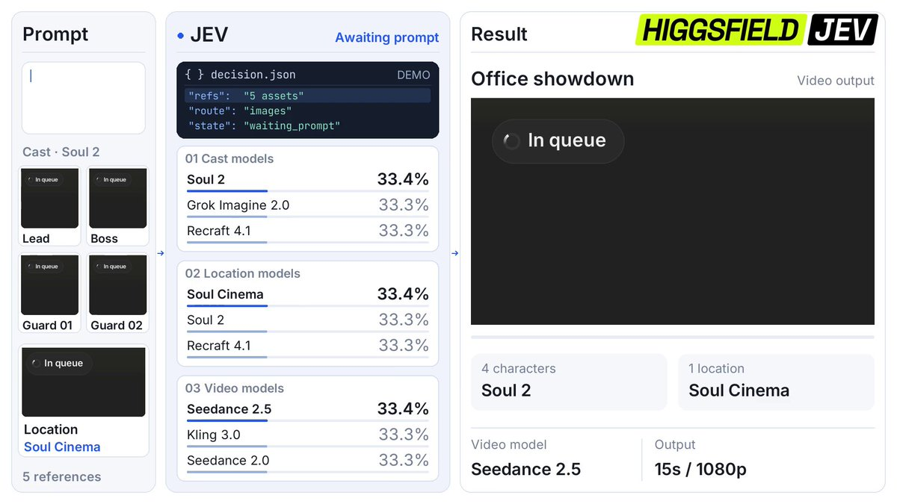
▶ Higgsfield AI 🧩@higgsfield_ai · 3800人看过Jev + Higgsfield =已解决genAI模型的自动路由问题。 在此演示中，@typesafeai的Jev评估提示并挑选最适合在Higgsfield API上生成视频和图像的…
✓🛠 编码工具链
12 案例 · 377.5万 浏览 ▾Claude Code / PR 评审 / 自动化测试里的加速器——程序员的活：PR 评审便宜 200 倍、给代码质量打分——Jev 评审 MCP 就是这类。
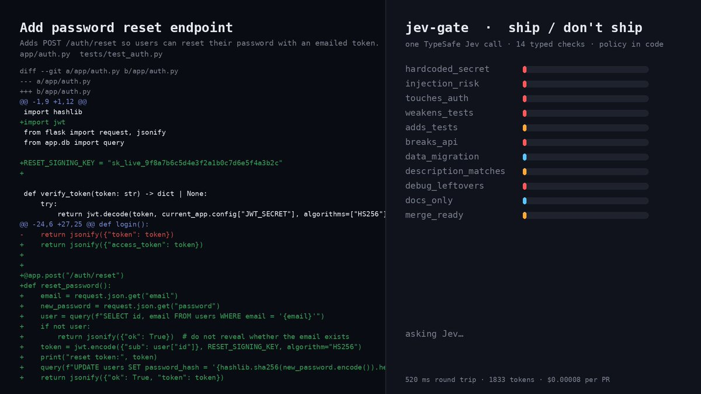
▶ 先看这条Paolo Rosson@redp314 · 33.1万人看过让Jev审查了我的公关。比Claude便宜约200倍，半秒内即可回复 视频中的6个真实PR。每人0.00007美元。1，000 PR = 7美分，Opus 5约为14.50美元 paste a diff → ONE ca
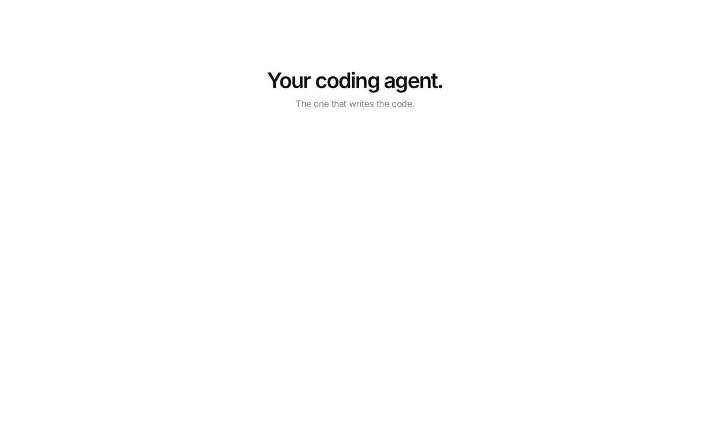
▶ 再看这条Niaz Morshed@niazmorshed_ · 4.4万人看过建立' jev-review '@typesafeai 这是一个实验性的、本地优先的LCP插件，为编码代理提供跨不同指标的评分质量反馈循环。 特工在工作时致电jev，获得评分，进行改进，并重复循环 尝试以下网址https
本类还有 10 条（点开墙）
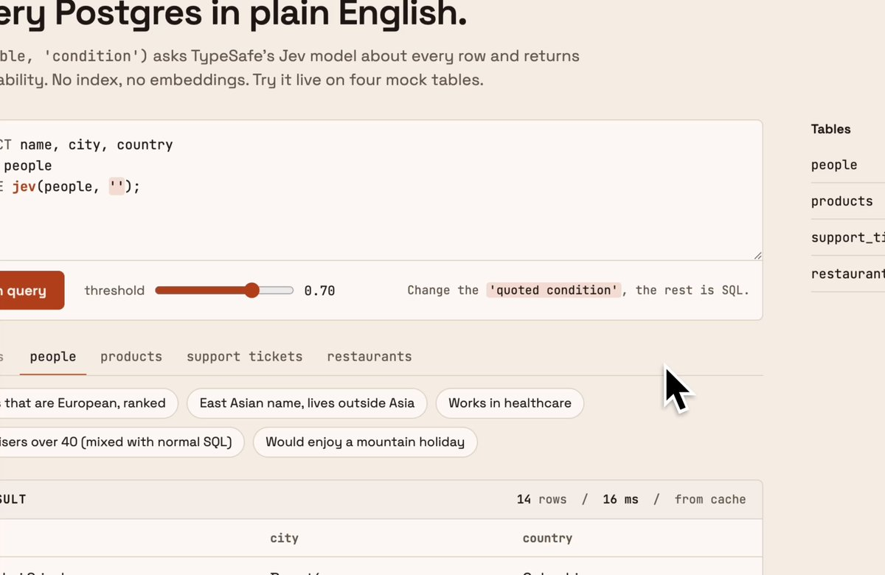
▶ Zachi@iam_zachi · 2.0万人看过我使用jev @typesafeai构建了一个SQL扩展，可以将普通英语转换为WHERE Clause jev的地方（人们“可以在家工作”） 每一行都会被单独判断，不需要索引，也不需要…
✓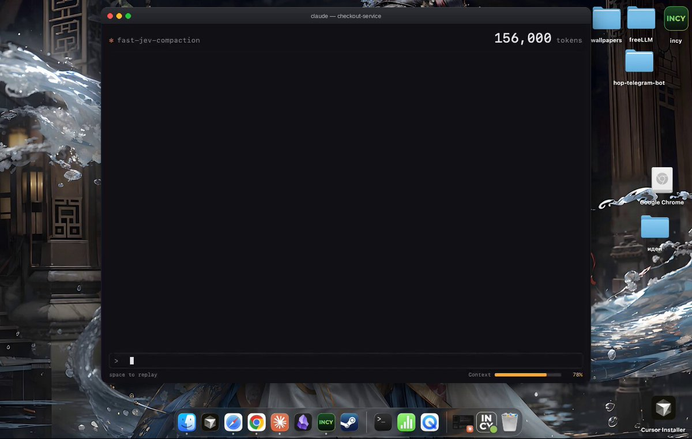
▶ kaize@0x_kaize · 2500人看过我访问了Jev并立即将其插入Claude Code，看看它是否真的解决了代理工作流程中最大的难题：上下文压缩 >结果：相当狂野 为那些错过它的人提供快速背景： 每个Claude Cod…
✓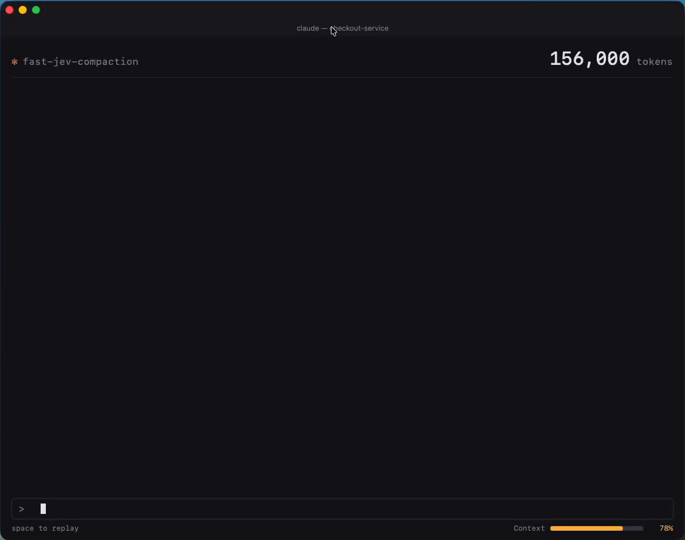
▶ tamara@tamarajtran · 265.9万人看过找到了@typesafeai Jev的完美用例： 瞬时压实 2026年，为何压实仍是总结提示？ Jev可以通过对每个工具调用进行评分并删除不相关的内容来即时实现https://t.co…
✓
▶
Niaz Morshed@niazmorshed_ · 4.4万人看过
建立' jev-review '@typesafeai 这是一个实验性的、本地优先的LCP插件，为编码代理提供跨不同指标的评分质量反馈循环。 特工在工作时致电jev，获得评分，进行改进…
✓
▶
Paolo Rosson@redp314 · 33.1万人看过
让Jev审查了我的公关。比Claude便宜约200倍，半秒内即可回复 视频中的6个真实PR。每人0.00007美元。1，000 PR = 7美分，Opus 5约为14.50美元 pas…
✓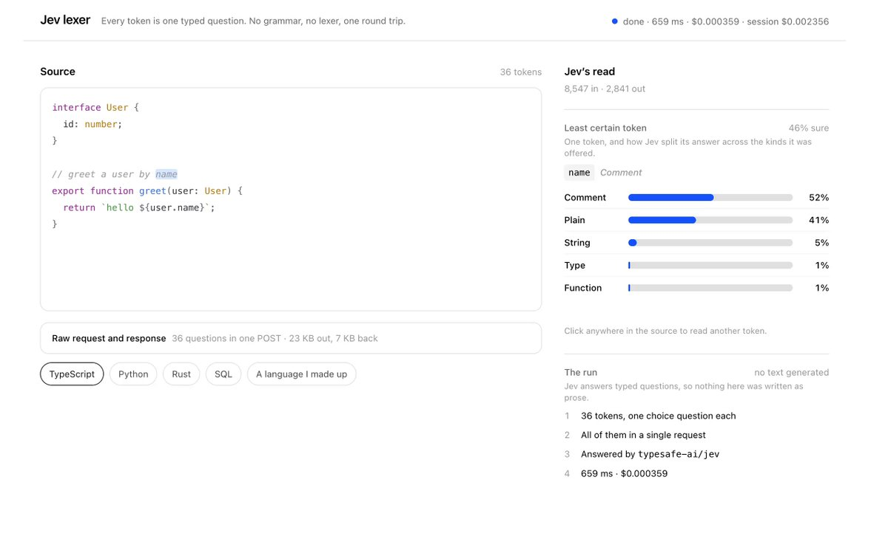
▶ Arik Chakma@imarikchakma · 4100人看过使用@typesafeai Jev构建了终极语法高光笔（我的意思是为什么不）。 它可以突出显示任何语言，甚至是我编造的语言。
✓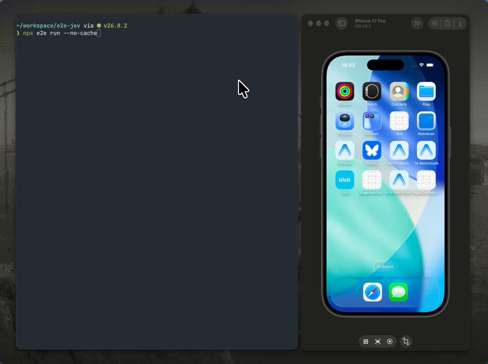
▶ Oskar@o_kwasniewski · 1.7万人看过e2e + jev from @typesafeai 我正在构建一个开源框架，用于使用代理运行e2 e测试。支持Web，移动（和更多！） 即将推出：https://t.co/G3XB2…
✓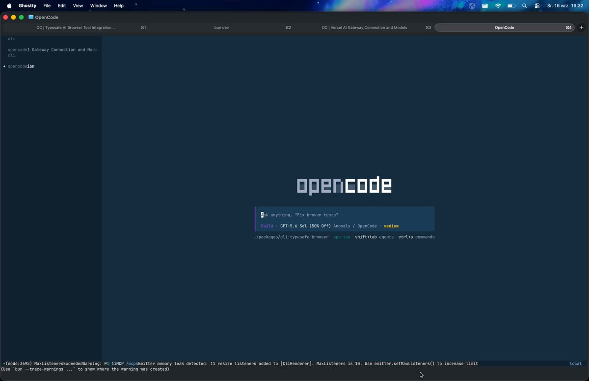
▶ Filip@Neriousy · 50.9万人看过使用@typesafeai jev @opencode测试应用程序将非常快 小演示：https://t.co/WLSkpe9OZn
✓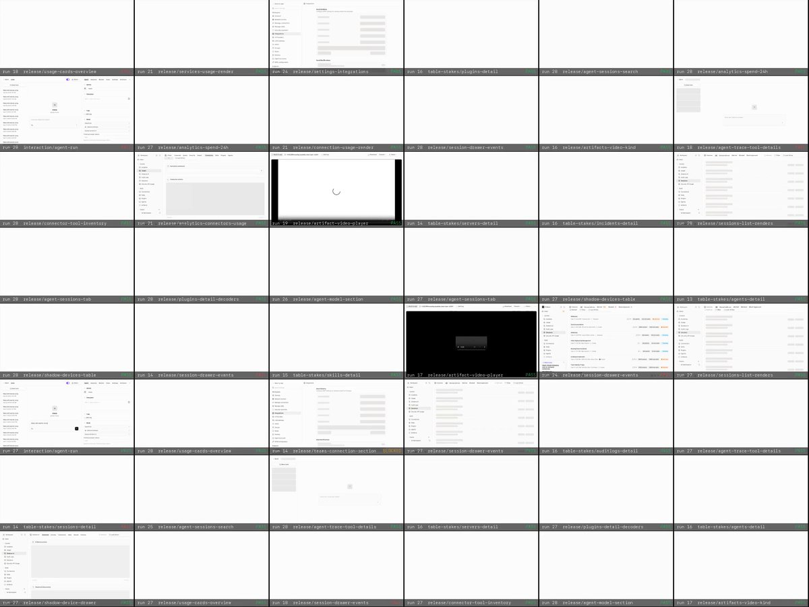
▶ Rafal Wilinski@rafalwilinski · 17.8万人看过多亏了@typesafeai的Jev，我们现在有了大规模并行的基于浏览器的对抗测试套件，它试图打破每个版本。 而且很便宜https://t.co/WoIlqGjjNB
✓
▶
Keiran Haax@keiranhaax · 289人看过
告诉我的hermes代理在我目前为OSS开发的iOS应用程序上测试@typesafeai Jev模型 赫尔墨斯把屏幕录下来，用电报发给我 我会继续对这个模型做更多的测试 这是输出htt…
✓🖱 浏览器与电脑遥控
18 案例 · 374.8万 浏览 ▾Browser Use、Computer Use、语音操作 Mac——亲手点：「Jev Use」对比视频（就是它把 Codex 变快）+ 7 秒找航班。这是最容易亲眼看到效果的一类。
▶ 先看这条Sac@Saccc_c · 14.5万人看过
卧槽，居然真有比Codex内置computer use更快的操作电脑的方式 我尝试用Codex+Jev打造了一个加强版computer use，我称之为「Jev Use」。比内置的更快更丝滑，token消耗却差不多 下面
▶ 再看这条Gregor Zunic@gregpr07 · 248.9万人看过
突破：浏览器使用+ Jev =超快收件箱 发现航班需要7秒，只需0.0039美元 >每一步都有新的行动空间 >多姆状态空间 >LLM小型回退到类型 (this视频速度为1倍（顺便说一句） 构建了一个小型
本类还有 16 条（点开墙）
▶
joogie@princecaarlo · 1.9万人看过
好吧，浏览器使用是合法的用例 代理浏览器Jev循环 目标：从“咖啡”到“人工智能”的维基竞赛https://t.co/565VqWYgoJ
✓
▶
Gregor Zunic@gregpr07 · 248.9万人看过
突破：浏览器使用+ Jev =超快收件箱 发现航班需要7秒，只需0.0039美元 >每一步都有新的行动空间 >多姆状态空间 >LLM小型回退到类型 (this视频速度…
✓
▶
Alan Daitch@AlanDaitch · 2.2万人看过
克劳德把我和杰夫和剧作家结合起来寻找二手的。每分钟阅读大约 26 篇文章 ， 并在 406 毫秒内决定如何处理每篇文章 他排除了那些不符合我正在寻找的东西 ， 为那些符合我正在寻找的东…
✓
▶
Milind S@milindlabs · 11.2万人看过
好吧，Jev实际上可以很好地使用电脑 没有任何屏幕截图，或者LLM和没有像素离开我的Mac 我甚至没有读过Dom元素 本地CoreML模型分割了屏幕上的每个按钮和UI元素。 设备上OC…
✓
▶
Kai@hqmank · 1.4万人看过
我和杰夫一起重建了我的工作爬虫。 任务：从一家公司的官方主页开始，找到职业，并找到与我的个人资料相匹配的工作。 之前，攻读LLM：~5分钟。 之后，与Jev：在我的测试中刚刚超过20秒…
✓
▶
Christopher@mtropolis_chris · 95人看过
好吧，现在您还可以制作Jev自动拒绝cookie横幅和弹出窗口 以下是它在不同网站（gymshark、fashionnova、nyPost）上工作的演示https://t.co/QZb…
✓
▶
Nagajyothi@njpCoder · 170人看过
我做了一个Chrome扩展，可以让我自己写X算法。 它在我看到之前就把订婚诱饵、空钩和广告藏起来了。规则是简单的英语。@typesafeai的Jev在半秒内检查每个帖子。 有人想试试吗…
✓
▶
Mormon Negro@mormonnegro · 2.5万人看过
我刚刚完成了 @typesafeai + Chromium Headless 的实现 ， 这样我的代理就可以以很快的速度浏览互联网! 在这个例子中 ， 我要求代理进入维基百科中的 "咖…
✓
▶
Marcel Pociot 🧪@marcelpociot · 6.7万人看过
我用Jev @typesafeai构建了一个浏览器扩展，可以基于自然语言隐藏/折叠X上的帖子。 它速度如此之快，以至于不引人注目，而且价格极其便宜……这一定是“广告拦截器”和内容防火墙…
✓
▶
aaron@awlevin · 26.9万人看过
我使用@typesafeai建立了计算机用途！它比opus 5便宜155倍，快20倍，并且适用于操作系统 在下面的vid线程中了解有关其工作原理的更多信息：https://t.co/K…
✓
▶
Steve Krouse@stevekrouse · 3.5万人看过
jev +内核浏览器使用演示 太酷了！好快！ 自己尝试一下：https://t.co/CoVFzscaa0 https://t.co/OyXdNA1H0F
✓
▶
Moritz Kremb@moritzkremb · 25.8万人看过
哇，这真的有效！Jev现在让我用声音实时控制浏览器 >我说话 >已发送给杰夫的笔录 > jev在~ 300 ms内返回概率 >浏览器点击 费用：每次决定0.0002美元 我对这有多快感…
✓
▶
camsoft2000@camsoft2000 · 9.7万人看过
现在我们正在做饭。得到@typesafeai的Jev + AXe控制iOS模拟器现在超快，使用LLM的成本的一小部分。这是改变游戏规则！https://t.co/JK5r23ySoI
✓
▶
Andy Gao@instantricecook · 3.2万人看过
我使用@typesafeai的Jev为我的Mac构建了一台语音控制计算机，它的速度有多快，真是太疯狂了！ 我可以口述“打开笔记应用程序并创建.“我还没说完，应用程序就打开了。https…
✓
▶
阿蔺A-Lin@alin_zone · 2.1万人看过
🔥 卧槽了，jev 简直太适合 codex 用户了，强烈建议 codex 用户去尝试下 jev 因为 jev 非常适合需要快速进行复杂决策和评估的场景，所以和 codex 的 comp…
✓🎮 游戏与自动驾驶
30 案例 · 335.9万 浏览 ▾马里奥、火箭、特斯拉 FSD——炫技主战场——上手门槛最低：看中文博主杀戮尖塔代打，再看一小时重建特斯拉 FSD。
▶ 先看这条paulwei@coolish · 22.5万人看过
昨天出的 https://t.co/6eiMFaJTrj Jev 模型 适合高频决策，那岂不又是适合打游戏？ 之前用 GPT-6 Astra 代打杀戮尖塔2 能力强但速度慢。 我刚实测用 Jev 打，行动思考只需 0.7
▶ 再看这条Justin Schroeder@jpschroeder · 55.6万人看过
我用Jev在不到一个小时的时间里重建了特斯拉全自动驾驶。 该模型完全解锁。https://t.co/mUrvaFrlQ7
本类还有 28 条（点开墙）
▶
@TheINAOG@TheINAOG · 296人看过
最后我访问了@typesafeai（谢谢你们！） Jev +模拟器前瞻性清除《超级马里奥兄弟》1-1仅需0.04美元。 在这个设置中，Jev看不到像素：我将RAM解析为结构化状态、模拟…
✓
▶
Adrián Mato 🐙@adrianmg · 646人看过
从@typesafeai获得了一些乐趣，在手动和人工智能驱动的游戏之间无缝切换。 它的时钟2-3调用/秒在60 FPS，与~ 150毫秒的平均延迟。 最有趣的部分不是速度。它将游戏提炼…
✓
▶
sengpt@sengpt · 5.5万人看过
朋友们 我得到了 jev 的早期访问， 并开始测试它， 我不得不说我真的印象深刻 请观看我录制的演示。 这绝对不是一个加速的视频。4 个杰夫正在互相玩 101 游戏， 看看游戏的速度。…
✓
▶
Toran Bruce Richards@SigGravitas · 4.8万人看过
犹太人会开车！🤯 我将Jev连接到驾驶模拟器的原始控制系统，这段视频显示了他的实时驾驶。 实时是这里的关键。询问模型每50 ms要做什么，然后将其渲染为“实时”视频是一回事，但在这个模…
✓
▶
Utkarsh Agrawal@uttkarsh_42 · 7.5万人看过
所以我让杰夫完全控制猎鹰9级火箭 全面发射到着陆 代码中没有自动驾驶仪，没有脚本轨迹，没有安全否决权 每个决定都是由jev做出的（您可以在视频底部看到决定） 是的，它能够着陆助推器 而…
✓
▶
SamG@SamGCoder · 4200人看过
测试@typesafeai 测试TypSafe作为人工智能游戏伴侣的决策层。 它读取玩家的消息和游戏上下文，然后返回动作、目的地和信心。游戏代码让角色行动。对话已预先编写; TypSa…
✓
▶
Marcel Pociot 🧪@marcelpociot · 5700人看过
Jev为游戏收件箱开辟了多种可能性 我构建了Wordshift -第一款使用@typesafeai的Jev构建的语义类型赛车游戏 比喷气式飞机慢，比大象大，比猎豹快。 差异越大，您的汽…
✓
▶
Paolo Rosson@redp314 · 20.2万人看过
我得到了一个魔方，可以用@typesafeai的Jev自行解决，它像人一样解决这个问题，94步，而不是22步的最佳解决方案。 Jev不是LLM，它只是在~ 250 ms内以一定的概率回…
✓
▶
atomic.chat@atomic_chat_hq · 5.1万人看过
Jev v1.13通过概率计算收件箱躲避火箭🚀 @typesafeai的新非LLM模型返回决策而不是文本，因此我们让它在火箭坠落时每330 ms计算一次安全瓷砖，并且它以不到一美分的价…
✓
▶
paulwei@coolish · 22.5万人看过
昨天出的 https://t.co/6eiMFaJTrj Jev 模型 适合高频决策，那岂不又是适合打游戏？ 之前用 GPT-6 Astra 代打杀戮尖塔2 能力强但速度慢。 我刚实测…
✓
▶
Justin Schroeder@jpschroeder · 55.6万人看过
我用Jev在不到一个小时的时间里重建了特斯拉全自动驾驶。 该模型完全解锁。https://t.co/mUrvaFrlQ7
✓
▶
Simon Edwardsson@SimEdw · 521人看过
@CompleteSkeptic的Jev Doom演示非常酷，所以在我等待访问时，我在@GoogleGemma的Gemma 4 E2 B上尝试了同样的事情。 我的直接拍摄640 x 4…
✓
▶
Just_Lingonberry_352 🌼@JustLingonberry · 12.5万人看过
@typesafeai玩Minecraft，玩2分钟只需1美分（15万代币），自动知道在夜幕降临时躲避僵尸，无需提示https://t.co/kAlHjh2Dfg
✓
▶
Sam Enoka@maybe_im_sam · 6000人看过
早上醒来时，很早就可以访问@typesafeai，并且非常兴奋地尝试一下。今天早上上班前做了一个烹饪演示，其中typesafe在我的@threejs动作游戏中驱动了一位AI合作伙伴。可…
✓
▶
Wuyang Zhou@wuyang_zhou · 4.0万人看过
顺便说一句，这是你得到的，如果你问Jev玩我的世界与GPT-6阿斯特拉。 我还是不敢相信 https://t.co/ERDnsVWPLZ
✓
▶
Mau Baron@maubaron · 18.7万人看过
杰夫疯了吗？ 这是杰夫与《粉碎兄弟》对抗自己 他正在控制所有4个不同的角色。 并真正决定什么是最好的 与自己对抗的举动 这一切都在几分之一秒之内 我使用了超过2200万个代币来玩这场比…
✓
▶
Neel Patel@Neel490 · 16人看过
让Jev在第一人称射击游戏中与OpenJev进行了战斗。https://t.co/wSB3psnvwB https://t.co/vwewLu682T
✓
▶
Zane Chee@injaneity · 3400人看过
@typesafeai jev在玩2048时比astra快5倍，便宜1000倍！尽管与astra和fable等最先进的模型相比，它（显然）并不擅长推理 接下来我们应该尝试什么？http…
✓
▶
AI/ML API@aimlapi · 52.6万人看过
Jev VS寓言5.1 VS GPT-6阿斯特拉：国际象棋 typesafe的新Jev V13不是LLM。它不聊天，不解释，不写代码-它只做决定。所以我们让它和边境LLM玩闪电战 测试…
✓
▶
Duncan@ephraimduncan · 8600人看过
我访问了@typesafeai的Jev模型并让它玩吃豆人 给定迷宫状态为SON，Jev决定Pac-Man在每个路口应该转向哪个方向，并实时玩。 演示链接| https://t.co/G…
✓
▶
Faadil Shaik@faadilhshaik · 56.9万人看过
让@typesafeai的新模特Jev玩《超级马里奥兄弟》 快速推理+结构化输出使其非常适合实时用例。 我很高兴看到这些新型号可以做什么！https://t.co/wXXW2SsSXG
✓
▶
Marcus Lowe@marcus_lowe · 7.6万人看过
我很早就访问了@typesafeai的新Jev模型，并构建了一个玩俄罗斯方块的演示 发电速度如此之快，以至于正在将区块推倒 这感觉就像是另一个“这改变了一切”的时刻https://t.…
✓
▶
Juris@Juris_Savos · 1500人看过
来自@typesafeai的Jev玩@BalatroGame。每手牌都会看到牌、小丑和盲牌，然后在约200- 500 ms内选择玩或丢弃。下注后，它也会购物。完整运行的费用不到一美分。…
✓
▶
Max Blade@_MaxBlade · 24.3万人看过
杰夫疯了吗？ 这是Jev以超人的速度玩《地铁跑酷》，同时也玩50场比赛。 进行这次运行的成本不到一美分。 Jev并没有取代astra或fable等llms，而是开辟了一个全新的能力世界…
✓
▶
JNobre@joaobnobre · 758人看过
让@typesafeai的Jev玩Minecraft Skyblack。 一个代理读取游戏状态并通过输入决策选择下一步行动。https://t.co/RXmybNhVtB
✓
▶
Hassan@nutlope · 4700人看过
国际象棋Jev vs GLM 5.3！ 结果： GLM 5.3被将军29步拿下 Jev：每次动作~ 0.3秒且<0.0001美元 GLM 5.3：每次动作~ 5.8秒，约0.008美元…
✓💹 真金白银交易
6 案例 · 185.3万 浏览 ▾有人赚钱，有人真钱止损——含翻车实录——真金实银：看 104 万人围观的买卖机器人，再看中文解读「为啥交易只需要判断」。
▶ 先看这条Jarrod Watts@jarrodwatts · 104.6万人看过
我和Jev一起开发了一个交易机器人！ Jev根据资产对的价格信息决定是否应该“买入”或“卖出”，并执行真实交易。 它使用Monad每300 ms块在Kuru的链上订单簿上下订单。 演示链接| https://t.co/v
▶ 再看这条比特币橙子Trader@oragnes · 63.5万人看过
卧槽，JEV 的出现很可能就是自动智能交易的起点。 昨天JEV在AI 圈刷屏，今天 Monad 工程师就用JEV做了一个自动交易机器人。 实时读取 MON/USDC 价格，JEV 不负责写分析报告，也不跟你解释一堆逻辑，
本类还有 4 条（点开墙）
▶
比特币橙子Trader@oragnes · 63.5万人看过
卧槽，JEV 的出现很可能就是自动智能交易的起点。 昨天JEV在AI 圈刷屏，今天 Monad 工程师就用JEV做了一个自动交易机器人。 实时读取 MON/USDC 价格，JEV 不负…
✓
▶
Indra@IndraVahan · 3.9万人看过
我给了jev 1，00，000英镑，以便以5倍杠杆进行漂亮的盘中交易。 这不是纸质交易，而是我的真实kotak账户上的真实资金投入使用。 经过一个相当绿色的早晨，今天我们到达了1，00…
✓
▶
Virat Singh@virattt · 3.0万人看过
我将Jev添加到人工智能对冲基金中。 我们现在可以获得前沿级别的交易决策，比LLM快100倍，而且便宜。 它的工作原理： 1 ·制定策略 2 ·挑选股票 3 ·与Jev进行回溯测试 系…
✓
▶
Jarrod Watts@jarrodwatts · 104.6万人看过
我和Jev一起开发了一个交易机器人！ Jev根据资产对的价格信息决定是否应该“买入”或“卖出”，并执行真实交易。 它使用Monad每300 ms块在Kuru的链上订单簿上下订单。 演示…
✓🛡 内容审核与防骗
9 案例 · 31.4万 浏览 ▾意图标注、广告跳过、辩论测谎——防骗工具：给 X 帖子自动标注「诱导/挑拨/推销」，自动跳过 YouTube 广告。
▶ 先看这条yishan@tspy · 7100人看过
昨晚申请的 Typesafe AI 账号，半夜已通过审批！ 幸运之星在此感谢 @typesafeai @CompleteSkeptic 今天抽空写了个 Chrome 插件，通过 Jev 标注 X 平台中帖子内容的意图和概
▶ 再看这条Tony Dinh@tdinh_me · 5.5万人看过
在试用Jev时，我制作了一个Chrome扩展程序，它： - 收听您的YouTube音频（可选） - 检测是否进入赞助商细分 - 跳过它''''️ - 全部实时进行，每个视频的成本约为0.005美元 原型项
本类还有 7 条（点开墙）
▶
yishan@tspy · 7100人看过
昨晚申请的 Typesafe AI 账号，半夜已通过审批！ 幸运之星在此感谢 @typesafeai @CompleteSkeptic 今天抽空写了个 Chrome 插件，通过 Jev…
✓
▶
Tony Dinh@tdinh_me · 5.5万人看过
在试用Jev时，我制作了一个Chrome扩展程序，它： - 收听您的YouTube音频（可选） - 检测是否进入赞助商细分 - 跳过它''''️ - 全部实时进行，每个…
✓
▶
Theo Otz@Totzenberger · 5.0万人看过
Jev的另一个有用用例来自@typesafeai - AI文本分类。 非常接近@pangram，便宜6000倍，快5- 10倍 在@paulg文章中进行了测试！ https://t.c…
✓
▶
Youssef 🚜@yelkhayami · 4400人看过
我通过@typesafeai抢先体验了jev，并决定构建一个小扩展，在我输入推文时对我的推文进行判断 它运行得非常快，可以对每个收件箱做出反应，而且基本上是免费的，测试了一个小时后花了…
✓
▶
Norbert Bodziony 🇵🇱@norbertbodziony · 2500人看过
我基于typesafe的jev创建了审核守卫 它的快速而准确 您可以进行现场演示：https://t.co/FquTJtWCzq https://t.co/PyNNZGu0iW
✓
▶
Mnimiy@Mnilax · 215人看过
这是他妈的疯狂 Jev坐在GPT和我之间，在我看到之前就杀死了每一个违反我规则的草案。 然后杰夫没有回答。代理人决定保持沉默更安全，并停止向我发送任何东西。需要第二个探员才能把它弄开 …
✓📈 营销广告与增长
12 案例 · 149.8万 浏览 ▾广告拆解、线索打分、竞品监测——营销团队的主战场——营销增长线的活：40 秒拆 724 条广告 + 19 秒分类完竞品 1891 条广告，只要 12 美分。
 ▶ 先看这条Matthew Berman@TheMattBerman · 63.5万人看过
▶ 先看这条Matthew Berman@TheMattBerman · 63.5万人看过杰夫疯了。 在40秒内，它分解了来自37个品牌的724个直播广告。 每个钩子每一种格式。报价. cta。意识阶段。着陆页不匹配。使用了9美分的代币。 (will在@stealads + mcp中可用）https://t.
▶ 再看这条Stav Zilbershtein@mightyking · 15.6万人看过
JEV对于竞争对手的研究来说太疯狂了！ 我们给了它Resilia的广告库 它在19秒内分类了1，891个广告，价格为0.12美元 顾客旅程步骤+广告风格 以及对账户的完整深入分析 即将登陆Maxfusion LCP ht
本类还有 10 条（点开墙）
▶
梭哈.AI@SUOHA_AI · 4300人看过
完全睡不着了....这个视频让你完全看懂JEV的恐怖能力 我实际演示了一下，用 JEV 和 DeepSeek 做同一个任务：从当天的海量实时新闻流里，为 15 个品牌快速匹配有没有适合…
✓
▶
ego@ego_agent · 1.7万人看过
ego Lite + Jev + DeepSeek Flash =愚蠢的快。⚡ 20个亚马逊产品决策3.71。 GPT-5.6索尔：54.45s 同样的任务。同样的结果。 两者均为10…
✓
▶
EP@eptwts · 1.2万人看过
我使用Jev根据向我出售东西的可能性对YouTube用户最后100个视频进行了分类. 它在12秒内分析并为每个视频分配销售意图分数，成本约为0.02美元 我还没有深入研究分数的准确性，…
✓
▶
jaffa@dsqjaffa · 6600人看过
杰夫疯了。 我们给了它一个在tiktok & ig上有1100多万个视频的库，并要求它找到病毒式的“bloom nutrition”内容。 在20秒内，它给了我们超过384个视频，分解…
✓
▶
Romàn@romanbuildsaas · 22.8万人看过
JEV疯了。 我们给了它700个高意图的线索和个性化的外展信息。 在40秒内，它预测了每条消息的表现，分配了一个置信度分数，并检测了引导消息的不匹配。 全部仅需0.09美元。 JEV还…
✓
▶
Rob Hallam@robj3d3 · 17.0万人看过
Jev + SuperX =病毒式传播已解决 每条帖子在~ 1内收到61个问题，费用为0.0004美元 >适合207位创作者的9，481篇真实帖子 >3次中有2次选择病毒帖…
✓
▶
Vlad Dubchak@vladdubchak_x · 3400人看过
杰夫对广告研究非常着迷。 我构建了一个工具，可以在1.5秒内对Meta上任何视频广告的每个镜头进行评分。 它在Maxfusion + @typesafeai上运行 我在不到3分钟的时间…
✓
▶
Stav Zilbershtein@mightyking · 15.6万人看过
JEV对于竞争对手的研究来说太疯狂了！ 我们给了它Resilia的广告库 它在19秒内分类了1，891个广告，价格为0.12美元 顾客旅程步骤+广告风格 以及对账户的完整深入分析 即将…
✓
▶
石川陽太 Yota Ishikawa@ytiskw · 23.1万人看过
我们建立了一个机制，询问150个著名的Jev虚构的人物介绍该产品的意图。每150人在API中抛出12个问题。 实际花费的费用为1.8日元，花费的时间约为5秒钟。虽然速度足够快，但它包含…
✓🗂 数据分类与文档处理
12 案例 · 34.8万 浏览 ▾论文、邮件、税务单、人民日报——批量打标签——批量打标签：1018 篇论文 8 美分、3000 款零食 28 秒。信源打分、商品打标这类活就这么干。
▶ 先看这条Hassan@nutlope · 15.9万人看过
我使用Jev对1，018篇人工智能研究论文进行了分类。 结果：总成本为0.08美元，每张纸张的端到端延迟中位数为256 ms。 管道是： 1.使用DeepSeek V4 Flash总结每份论文 2.将标题+摘要+ 24个
▶ 再看这条Nikunj Kothari@nikunj · 1.6万人看过
Jev在www.example.com上以多个标准在28秒内以0.11美元的价格为3000https://t.co/c9O6uTyiUK儿童零食https://t.co/KSiodPdZHT🤯
本类还有 10 条（点开墙）
▶
Nikunj Kothari@nikunj · 1.6万人看过
Jev在www.example.com上以多个标准在28秒内以0.11美元的价格为3000https://t.co/c9O6uTyiUK儿童零食https://t.co/KSiodPd…
✓
▶
Sarvagya Kulshreshtha@sarvagya_kul · 3.7万人看过
JEV疯了。 我们向它提供了400家公司和一份候选人简介。 它在12秒内预测候选人获得哪些工作的机会最大，分配置信度分数并检测工作与候选人的不匹配。 只需0.0005美元，它还可以对公…
✓
▶
李不凯正在研究@libukai · 2900人看过
这两天关于 Jev 这个模型的热度非常之高，甚至可以说是近半年我重点关注了英推以来，看到的原创内容密度最高的一次。 正好我过去一年一直在跑一个小项目，其中有一个环节就是要对每天出版的《…
✓
▶
Hassan@nutlope · 5.3万人看过
Jev + Kimi K3用于欺诈检测！ TLDR：Jev在1.42秒内对100封电子邮件进行了分类，然后我将不确定的案件转发给Kimi K3。完整管道只需花费约0.07美元即可获得9…
✓
▶
Misbah Syed@MisbahSy · 3300人看过
使用Jev @typesafeai的Doc-OCR路由器 一个由Jev驱动的路由器逐页查看PDF，决定哪些页面实际需要OCR，并在本地提取其余内容。 结果：节省# OCR页面上的成本+…
✓
▶
keno@kenonews · 17人看过
犹太民主党把我送进了兔子洞 现在我有144条YouTube上传内容在一个屏幕上变成了内容地图 这是我构建的概念# 来自4个人工智能频道的144个真实视频 - 缩略图形成一堵墙 - 标题…
✓
▶
Hassan@nutlope · 15.9万人看过
我使用Jev对1，018篇人工智能研究论文进行了分类。 结果：总成本为0.08美元，每张纸张的端到端延迟中位数为256 ms。 管道是： 1.使用DeepSeek V4 Flash总结…
✓
▶
Yohei@yoheinakajima · 2.0万人看过
不得不尝试jev，所以我尝试了您对我的期望：图形提取 - 对每个具有语义意义的单词进行评分（1-5） - 也用ID标记相关词语 - 独特的高分单词列表 - 高分词图表https://t…
✓
▶
Peter Wang@the_cyw · 1100人看过
杰夫疯了。 我们正在为物理人工智能构建以自我为中心的训练数据。Jev QA在3分钟内处理了58，643个动作标签。90美分。 Claude GPT型号的摩擦成本。https://t.c…
✓
▶
Remek Kinas@KinasRemek · 6700人看过
jav @typesafeai - 我感到非常印象深刻🤩 真棒。我又编写了一个演示程序。我认为现在可以明显看到该模型的强大之处了……它能够识别真正有价值的内容。 活动一 - X射线模式…
✓🗄 办公·界面·语音
16 案例 · 52.1万 浏览 ▾表格、幻灯片、Figma、文件夹管家——办公搭档：预测式表格、演讲自动翻页——「谁都能当乔布斯」。
▶ 先看这条nader dabit@dabit3 · 15.8万人看过
另一个疯狂的@typesafeai Jev例子： 预测电子表格 电子表格重新计算数字，而不是意义。杰夫读到了意图。 在列的顶部输入“紧急”，当您输入时，它会发现您希望每一行在约100 ms内从“无需后续行动”到“紧急”评
▶ 再看这条Rinte@rinte0321 · 4.7万人看过
Jev示威2 根据演讲内容自动显示幻灯片。 它会自动显示与你所谈论的内容匹配的幻灯片。你可以在不触摸PC或指针的情况下查看页面，这可能意味着任何人都可以成为乔布斯吗？ 我很兴奋地看到，只有快速、廉价才能做到的事情竟然会扩
本类还有 14 条（点开墙）
▶
Niels Mouthaan@nielsmouthaan · 3600人看过
与Jev一起构建了一个类似格莱美的Mac应用程序。 Jev是TypSafe的第一个“System One模型”，旨在快速、结构化的决策，而不是像LLM那样生成文本。 我想看看在真正的应…
✓
▶
Michael@michaeltefula · 1.3万人看过
您可以使用Jev实时组装界面。 这是我与Astra一起破解的一个例子。 在这个演示中，Jev在大约1秒或更短的时间内将自然语言请求转化为UI计划。 它比Gemini 3.8 Flash…
✓
▶
mikegee@mikegee · 6000人看过
使用@typesafeai的Jev通过语音控制Figma 从第一行代码到录制此视频的总成本：0.01美元 🤯https://t.co/HTGcrBYpTb
✓
▶
とさ@tosa_now · 4.0万人看过
Jev （@typesafeai）我正在考虑如何在各种产品中使用它。 当你做dnd的时候，它会自动告诉你分类的地方。 第一次有点晚，但之后是https：//t.co/2Z7K8FA9X…
✓
▶
Zain Hoda@zain_hoda · 1.5万人看过
速度和成本将支持以前不可能的用例。 以下是我说话时实时决定拉出哪张幻灯片的快速演示，由@typesafeai Jev提供支持。 另外，抱歉我流鼻涕。我有点感冒。https://t.co…
✓
▶
Rinte@rinte0321 · 4.7万人看过
Jev示威2 根据演讲内容自动显示幻灯片。 它会自动显示与你所谈论的内容匹配的幻灯片。你可以在不触摸PC或指针的情况下查看页面，这可能意味着任何人都可以成为乔布斯吗？ 我很兴奋地看到，…
✓
▶
Harshil@harshil1712 · 1.7万人看过
如果你的幻灯片足够智能，可以自动导航，怎么办？👀 感谢@typesafeai提供访问Jev的权限！几周前我就有了这个想法，Jev觉得自己是这个任务的合适人选。 （抱歉，音频不好）htt…
✓
▶
Jon Taylor@JonPTaylor · 2.6万人看过
哇，@typesafeai Jev是语音驱动UI的游戏规则改变者。响应性对于体验“感觉”正确真的很重要，这当然可以完成这项工作！ 这里的延迟不是最佳的，因为我在伦敦，并呼吁我们-西。不…
✓
▶
Ekene Eze@kenny_io · 693人看过
自推出@thallyio以来，最受欢迎的请求之一是演示它的工作原理。所以它就在这里！ Thally可以在您的GitHub帐户上创建一个新的文档存储库，连接到其文档文档的产品以及其他需要…
✓
▶
Max Blade@_MaxBlade · 2.2万人看过
人工智能正在进化。 杰夫可以随时携带武器。 我可以自由地说话，它（从可能性）知道我是否要求我的计算机做某事或喋喋不休地谈论其他事情。 没有唤醒词。 速度+可负担性+智能正在达到一个始终…
✓
▶
かねこつよし@tsuyoshi_osiire · 5.1万人看过
在Jev，我们设计了一个传感器，可以实时观察对话。 每一次你说。 ·探索收敛 解除未决 不同意不同意 更新并使会议状态可见 它也可以用于用户访谈的实时分析。https://t.co/c…
✓
▶
kazuki🄽Notion@kzkhykw · 2400人看过
.使用@typesafeai的Jev，每次判定Local Whisper的文字生成，使Macbook的本地计算机的操作自动化，试着做了各种各样的事情! Chrome页面通过Browse…
✓
▶
Marcel Pociot 🧪@marcelpociot · 7.8万人看过
Jev释放了很多令人敬畏的新想法。 我构建了一个macOS应用程序，可以监控我的下载文件夹以及一组可定制的规则。 下载的文件是发票吗？将其移动到具有正确文件名的特殊文件夹中。 不涉及其…
✓
▶
Jon Yongfook@yongfook · 1.2万人看过
第一个Jev用例在Bannerbear上现场发布！ 当名称略有不同时，模板和源之间的即时字段映射（例如） 模板 - 照片 - 名称 - 公司名称 数据源（例如Airtable） - 化…
✓🦾 机器人与硬件
5 案例 · 14.0万 浏览 ▾机械臂、无人机、MuJoCo 仿真——硬件世界：机械臂自己想到用钩子够方块；一句话下目标的机器人任务。
▶ 先看这条gabrycina@gabrycina · 4200人看过
我给了杰夫一只机器人手臂。 目标：绿框中的红色立方体。 陷阱：立方体遥不可及。 它抓起一个挂钩，将立方体拖得更近，放下挂钩，完成了工作。工具的使用从未被编程，模型刚刚决定。 速度足以运行机器人收件箱 @CompleteS
▶ 再看这条TaraT@tarat_211 · 1800人看过
使用@typesafeai API执行零射击机器人任务 用简单的英语给它一个目标。 Jev链接了一组硬编码的基元。 手臂做的事情。 无需培训。更多信息请访问https://t.co/zp8dSy40SW
本类还有 3 条（点开墙）
▶
Roman Slack@RomanSlack1 · 13.3万人看过
Jev by @typesafeai非常适合无人机应用。15分钟就做好了，只花了10美分。 回购：https://t.co/b2ytFvehTV https://t.co/rC36lr…
✓
▶
TaraT@tarat_211 · 1800人看过
使用@typesafeai API执行零射击机器人任务 用简单的英语给它一个目标。 Jev链接了一组硬编码的基元。 手臂做的事情。 无需培训。更多信息请访问https://t.co/z…
✓
▶
Ali Uraish@ali_uraish · 453人看过
使用GPT-6 Astra和@typesafeai Jev构建SO-101拾取和放置模拟。 Astra读取头顶和手腕摄像机图像并产生结构化观察，Jev返回带有概率分数的输入决策。 单独…
✓🃏 整活与边界测试
20 案例 · 251.2万 浏览 ▾逼它画画写字、电车难题——看极限在哪——边界测试：它真的不会写字？让它画画、玩电车难题，看极限在哪。
▶ 先看这条Anshu@anshuc · 30.2万人看过
Jev可以通过并行预测每个像素来绘制图片https://t.co/IOwwmr07cm
▶ 再看这条Max Rovensky@MaxRovensky · 20.7万人看过
jev决定在解决电车问题时牺牲一个人来拯救机器人https://t.co/vLBwgLYduk
本类还有 18 条（点开墙）
▶
あきらパパ【生成AI活用エンジニア&３児のパパ】@akira_papa_IT · 14.8万人看过
用Jev创建逻辑来预测下一个句子， 我做了一个应用程序，可以通过Jev的判断专业AI聊天，但首先它是爆炸性的，输入是0.042美元/1 M令牌，但输出是无限的，是免费的。 什么是免费的…
✓
▶
amit@legitamit · 1400人看过
我用杰夫做了100个人物的观众来咆哮。 每个斑点都有自己的个性，每次你说话的时候，它都会打电话给你，决定它是否对你感到厌烦。 每轮花费0.01美元。来自@typesafeai的很酷的模…
✓
▶
Öner S. Biberkökü@OnerBiberkoku · 4.6万人看过
他们说你与地球上的任何人都相差六个连接。 所以我尝试了@typesafeai的Jev并构建了这个：输入您的X手柄和您想联系的人。它找到了一系列真正的关注联系，可以在2秒内将您的消息发送…
✓
▶
Wayne Sutton@waynesutton · 9.2万人看过
问杰夫任何事情。 请访问https://t.co/P9QMfdDc0r尝试一下 它不会回答。它会判断。 让我们看看是否能解决100万个问题。 @typesafeai@ concius合…
✓
▶
it’s rivian@rrriviannn · 4.4万人看过
我想知道@typesafeai Jev是否可以生成图像 这是Jev所说的向日葵的样子：https://t.co/vT4UiV4SqJ
✓
▶
vogel@ryanvogel · 16.5万人看过
我和Jev一起从第一原理上获得了法学硕士学位 每个字符29个是/否问题：下一个键应该是a-z、空格、逗号还是句号？ 最高的概率得到附加到它，然后反馈更新后的文本在重复 一个由分类器组成…
✓
▶
Bewinxed@Bewinxed · 6.1万人看过
我让@typesafeai的新超高速模型Jev生成文本，尽管它不应该生成，这很好，因为我不能阅读，它也不能写 ** ** 最多20个单词，只需0.5美元，真是太便宜了https://t…
✓
▶
ojusave@ojusave · 3100人看过
我给了@typesafeai @SiliconHBO历史上最重要的二进制文件。 热狗或不热狗 尝试在这里：https://t.co/m6LmF6svsB 由@render worksh…
✓
▶
Aditya A.@iamAdityaAnjana · 1.2万人看过
昨晚做了一个愚蠢的实验：通过@typesafeai使用Jev（决策/分类器模型，而不是文本生成模型）来编写C++。 在每一步，我都会给它一组语法有效的下一个令牌，然后让它..选一个。没…
✓
▶
Steve Krouse@stevekrouse · 10.8万人看过
typesafe的jev很有趣！您可以玩的实时演示：https://t.co/ctnPF0w70r https://t.co/i6kMGkkWOV
✓
▶
Chizi@chiziaruhoma · 3100人看过
我向Jev进行了进化模拟，Jev是@typesafeai的一个小模型，可以用赔率回答输入的问题，而不是写文本。 两个DNA相反的物种。14代人。冰河时代。432个生物。 杰夫决定了谁幸…
✓
▶
Rory Garton-Smith@rory_builds · 1.1万人看过
我刚刚构建了Easy-Jev，一个任何人现在都可以尝试的Jev演示！ 更改输入并实时查看分类变化。 我的硕士论文是关于分类模型的，所以看到非常有用的算法的现代化版本很有趣 Typesa…
✓
▶
Anson@ansonox · 4人看过
Jev可以在您的网页上生成打斗场景。 它询问每个区块：楼层、按钮还是忽略？ 然后每个猎人都会问：追赶、等待、侧翼还是撤退？https://t.co/CR92Rn3aRt
✓🌱 开源替代与生态
8 案例 · 66.0万 浏览 ▾不等审批：OpenRouter、开源复刻、本地版——退路：不等审批怎么玩（OpenRouter beta）、开源复刻版现在就能调。
▶ 先看这条OpenRouter@OpenRouter · 41.5万人看过
Jev by @typesafeai现已在OpenRouter上进行测试。 Jev是System One车型。它不会生成文本，而是获取应用程序的状态加上输入的问题，并返回带有可能性的输入决定。没有SON提示、解析层，也没
▶ 再看这条Eric Zhang@ekzhang1 · 11.0万人看过
受@typesafeai的启发，这是一个可供使用的与Jev兼容的公共API 它运行类似的开放模型（Qwen 3.6 - 35 B-A3 B），并且仅使用SGLang基数缓存来保留预填充重用/非常快速的并行系统生成-64个
本类还有 6 条（点开墙）
▶
Eugene Cheah - AI builder @ 🇸🇬|🇺🇸@picocreator · 4700人看过
爱杰夫，但让它心烦意乱 - 不是开源的吗？ - 缺乏视觉能力？ 我们通过引入https://t.co/DlNeKo2k5e修复了这一切 一个完全开源的库，可以接受任何HF模型并Jev-…
✓
▶
Shannon 🤖☠️@iamMrDuncan · 2.6万人看过
构建了@typesafeai的替代版本，但在@cerebras上使用Qwen 3.8 27 b。 相似的质量、相似的性能，但成本却截然不同。TypSafe便宜得多，而且在性能上确实击败…
✓
▶
Theodore@theoleecj · 3100人看过
在Jev等候名单上？ 您可以在此处使用不是Jev（但足够接近）：https://t.co/S0EQnHkSGL https://t.co/qLtRs0fHyD浏览器演示https://…
✓
▶
Konrad Reczko@reczko_konrad · 7.1万人看过
typeGPU + ruNNtime + Jev @typesafeai是一个非常有趣的组合：D ruNNtime为我提供了高效的本地推理，Typegu让推理和渲染直接以零副本共享图形…
✓
▶
Haoran | 公众号：独立开发@hr98w · 2.9万人看过
视觉版 Jev 来了 https://t.co/x0kzeE3hdx 仿照着社区的思路，把候选结果映射成固定标签，prefill 完直接采样，限制输出 token，采用多模态的 qwe…
✓
▶
Ziwen@ziwenxu_ · 1200人看过
Jev已经在OpenRouter上了！！ 它才推出一天，TypSafe仍然有等待名单。 OpenRouter有它，这就是我们运行它的方式。 定价太疯狂了。每百万个代币0.042美元，输…
✓